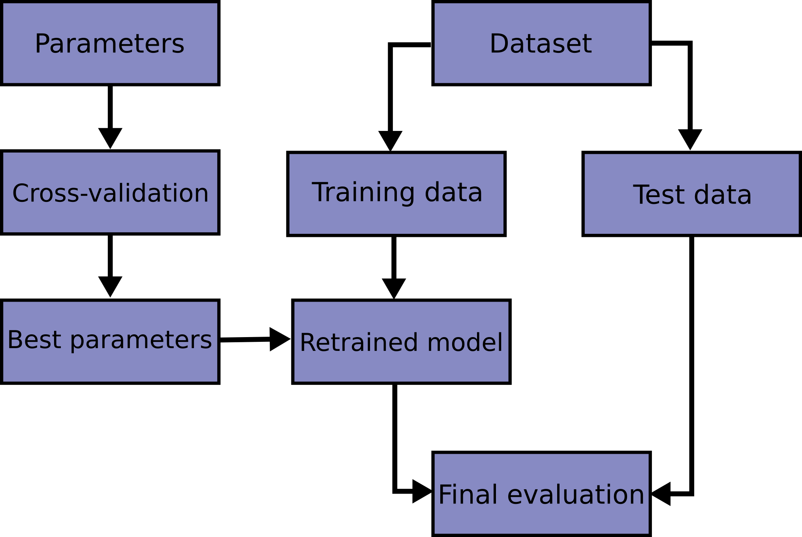

Kamakshaiah Musunuru is a open source software evangelist and full stack developer. He is academic at GITAM (Deemed to be) University, Visakhapatnam, India, and also a freelance trainer of data science and analytics. His teaching interests are MIS, Data Science, Business Analytics including functional analytics such as marketing analytics, finance analytics etc. He teaches subjects like R for business analytics, Python for business anlaytics, IoT, Big Data analytics using Hadoop, etc. His research interests are related to health care management, educational management, food & agriculture business, utilization of open source software for business applications. He is advocate of open source software. He has conducted few workshops and seminars on open source software tools and their utility for business. He lived in Ethiopia, North-East Africa, for two years to teach business management and visited Bangkok, Thailand, on research assignments.
Artificial intelligence (AI) is intelligence demonstrated by machines, unlike the natural intelligence displayed by humans and animals, which involves consciousness and emotionality. The distinction between the former and the latter categories is often revealed by the acronym chosen. ’Strong’ AI is usually labelled as AGI (Artificial General Intelligence) while attempts to emulate ’natural’ intelligence have been called ABI (Artificial Biological Intelligence). Leading AI textbooks define the field as the study of “intelligent agents”: any device that perceives its environment and takes actions that maximize its chance of successfully achieving its goals. Colloquially, the term “artificial intelligence” is often used to describe machines (or computers) that mimic ”cognitive” functions that humans associate with the human mind, such as “learning” and “problem solving”.
As machines become increasingly capable, tasks considered to require “intelligence” are often removed from the definition of AI, a phenomenon known as the AI effect. A quip in Tesler’s Theorem says ”AI is whatever hasn’t been done yet.” 1 For instance, optical character recognition is frequently excluded from things considered to be AI, having become a routine technology. Modern machine capabilities generally classified as AI include successfully understanding human speech, competing at the highest level in strategic game systems (such as chess and Go), and also imperfect-information games like poker, self-driving cars, intelligent routing in content delivery networks, and military simulations.
Artificial intelligence was founded as an academic discipline in 1955, and in the years since has experienced several waves of optimism, followed by disappointment and the loss of funding (known as an “AI winter”), followed by new approaches, success and renewed funding. 2 After AlphaGo successfully defeated a professional Go player in 2015, artificial intelligence once again attracted widespread global attention.3 For most of its history, AI research has been divided into sub-fields that often fail to communicate with each other. These sub-fields are based on technical considerations, such as particular goals (e.g. “robotics” or “machine learning”), the use of particular tools (“logic” or artificial neural networks), or deep philosophical differences. Sub-fields have also been based on social factors (particular institutions or the work of particular researchers).
The traditional problems (or goals) of AI research include reasoning, knowledge representation, planning, learning, natural language processing, perception and the ability to move and manipulate objects. General intelligence is among the field’s long-term goals. Approaches include statistical methods, computational intelligence, and traditional symbolic AI. Many tools are used in AI, including versions of search and mathematical optimization, artificial neural networks, and methods based on statistics, probability and economics. The AI field draws upon computer science, information engineering, mathematics, psychology, linguistics, philosophy, and many other fields.
The field was founded on the assumption that human intelligence “can be so precisely described that a machine can be made to simulate it”. This raises philosophical arguments about the mind and the ethics of creating artificial beings endowed with human-like intelligence. These issues have been explored by myth, fiction and philosophy since antiquity. Some people also consider AI to be a danger to humanity if it progresses unabated. Others believe that AI, unlike previous technological revolutions, will create a risk of mass unemployment.
In the twenty-first century, AI techniques have experienced a resurgence following concurrent advances in computer power, large amounts of data, and theoretical understanding; and AI techniques have become an essential part of the technology industry, helping to solve many challenging problems in computer science, software engineering and operations research.
Graph theory is the study of graphs, which are mathematical structures used to model pairwise relations between objects. A graph in this context is made up of vertices (also called nodes or points) which are connected by edges (also called links or lines). A distinction is made between undirected graphs, where edges link two vertices symmetrically, and directed graphs, where edges link two vertices asymmetrically; see Graph (discrete mathematics) for more detailed definitions and for other variations in the types of graph that are commonly considered. Graphs are one of the prime objects of study in discrete mathematics.
Definitions in graph theory vary. The following are some of the more basic ways of defining graphs and related mathematical structures. In one restricted but very common sense of the term, a graph is an ordered pair comprising:
, a set of vertices (also called nodes or points);
, a set of edges (also called links or lines), which are unordered pairs of vertices (that is, an edge is associated with two distinct vertices).
To avoid ambiguity, this type of object may be called precisely an undirected simple graph.
In the edge , the vertices and are called the endpoints of the edge. The edge is said to join and and to be incident on and on . A vertex may exist in a graph and not belong to an edge. Multiple edges, not allowed under the definition above, are two or more edges that join the same two vertices.
In one more general sense of the term allowing multiple edges, a graph is an ordered triple comprising:
, a set of vertices (also called nodes or points);
, a set of edges (also called links or lines);
, an incidence function mapping every edge to an unordered pair of vertices (that is, an edge is associated with two distinct vertices).
To avoid ambiguity, this type of object may be called precisely an undirected multigraph. A loop is an edge that joins a vertex to itself. Graphs as defined in the two definitions above cannot have loops, because a loop joining a vertex to itself is the edge (for an undirected simple graph) or is incident on (for an undirected multigraph) which is not in . So to allow loops the definitions must be expanded. For undirected simple graphs, the definition of should be modified to . For undirected multigraphs, the definition of should be modified to . To avoid ambiguity, these types of objects may be called undirected simple graph permitting loops and undirected multigraph permitting loops, respectively.
and are usually taken to be finite, and many of the well-known results are not true (or are rather different) for infinite graphs because many of the arguments fail in the infinite case. Moreover, is often assumed to be non-empty, but is allowed to be the empty set. The order of a graph is , its number of vertices. The size of a graph is , its number of edges. The degree or valency of a vertex is the number of edges that are incident to it, where a loop is counted twice. The degree of a graph is the maximum of the degrees of its vertices. In an undirected simple graph of order n, the maximum degree of each vertex is n ? 1 and the maximum size of the graph is n(n - 1)/2.
The edges of an undirected simple graph permitting loops induce a symmetric homogeneous relation on the vertices of that is called the adjacency relation of . Specifically, for each edge , its endpoints and are said to be adjacent to one another, which is denoted .
A directed graph or digraph is a graph in which edges have orientations. In one restricted but very common sense of the term, a directed graph is an ordered pair comprising:
, a set of vertices (also called nodes or points);
, a set of edges (also called directed edges, directed links, directed lines, arrows or arcs) which are ordered pairs of vertices (that is, an edge is associated with two distinct vertices).
To avoid ambiguity, this type of object may be called precisely a directed simple graph. In the edge directed from to , the vertices and are called the endpoints of the edge, the tail of the edge and the head of the edge. The edge is said to join and and to be incident on and on . A vertex may exist in a graph and not belong to an edge. The edge is called the inverted edge of . Multiple edges, not allowed under the definition above, are two or more edges with both the same tail and the same head.
In one more general sense of the term allowing multiple edges, a directed graph is an ordered triple comprising:
, a set of vertices (also called nodes or points);
, a set of edges (also called directed edges, directed links, directed lines, arrows or arcs); , an incidence function mapping every edge to an ordered pair of vertices (that is, an edge is associated with two distinct vertices).
To avoid ambiguity, this type of object may be called precisely a directed multigraph. A loop is an edge that joins a vertex to itself. Directed graphs as defined in the two definitions above cannot have loops, because a loop joining a vertex to itself is the edge (for a directed simple graph) or is incident on (for a directed multigraph) which is not in . So to allow loops the definitions must be expanded. For directed simple graphs, the definition of should be modified to . For directed multigraphs, the definition of should be modified to . To avoid ambiguity, these types of objects may be called precisely a directed simple graph permitting loops and a directed multigraph permitting loops (or a quiver) respectively. The edges of a directed simple graph permitting loops is a homogeneous relation on the vertices of that is called the adjacency relation of . Specifically, for each edge , its endpoints and are said to be adjacent to one another, which is denoted .
The paper written by Leonhard Euler on the Seven Bridges of and published in 1736 is regarded as the first paper in the history of graph theory. 4 This paper, as well as the one written by Vandermonde on the knight problem, carried on with the analysis situs initiated by Leibniz. Euler’s formula relating the number of edges, vertices, and faces of a convex polyhedron was studied and generalized by Cauchy and L’Huilier, and represents the beginning of the branch of mathematics known as topology.

More than one century after Euler’s paper on the bridges of and while Listing was introducing the concept of topology, Cayley was led by an interest in particular analytical forms arising from differential calculus to study a particular class of graphs, the trees. This study had many implications for theoretical chemistry. The techniques he used mainly concern the enumeration of graphs with particular properties. Enumerative graph theory then arose from the results of Cayley and the fundamental results published by P between 1935 and 1937. These were generalized by De Bruijn in 1959. Cayley linked his results on trees with contemporary studies of chemical composition. The fusion of ideas from mathematics with those from chemistry began what has become part of the standard terminology of graph theory.
In particular, the term “graph” was introduced by Sylvester in a paper published in 1878 in Nature, where he draws an analogy between “quantic invariants” and “co-variants” of algebra and molecular diagrams:
“[...] Every invariant and co-variant thus becomes expressible by a graph precisely identical with a Kekul diagram or chemicograph. [...] I give a rule for the geometrical multiplication of graphs, i.e. for constructing a graph to the product of in- or co-variants whose separate graphs are given. [...]”
The first textbook on graph theory was written by Ds , and published in 1936. 5 Another book by Frank Harary, published in 1969, was ”considered the world over to be the definitive textbook on the subject”, and enabled mathematicians, chemists, electrical engineers and social scientists to talk to each other. Harary donated all of the royalties to fund the P Prize.6
One of the most famous and stimulating problems in graph theory is the four color problem: “Is it true that any map drawn in the plane may have its regions colored with four colors, in such a way that any two regions having a common border have different colors?” This problem was first posed by Francis Guthrie in 1852 and its first written record is in a letter of De Morgan addressed to Hamilton the same year. Many incorrect proofs have been proposed, including those by Cayley, Kempe, and others. The study and the generalization of this problem by Tait, Heawood, Ramsey and Hadwiger led to the study of the colorings of the graphs embedded on surfaces with arbitrary genus. Tait’s reformulation generated a new class of problems, the factorization problems, particularly studied by Petersen and . The works of Ramsey on colorations and more specially the results obtained by Turn 1941 was at the origin of another branch of graph theory, extremal graph theory.
The four color problem remained unsolved for more than a century. In 1969 Heinrich Heesch published a method for solving the problem using computers. A computer-aided proof produced in 1976 by Kenneth Appel and Wolfgang Haken makes fundamental use of the notion of “discharging” developed by Heesch. The proof involved checking the properties of 1,936 configurations by computer, and was not fully accepted at the time due to its complexity. A simpler proof considering only 633 configurations was given twenty years later by Robertson, Seymour, Sanders and Thomas.
The autonomous development of topology from 1860 and 1930 fertilized graph theory back through the works of Jordan, Kuratowski and Whitney. Another important factor of common development of graph theory and topology came from the use of the techniques of modern algebra. The first example of such a use comes from the work of the physicist Gustav Kirchhoff, who published in 1845 his Kirchhoff’s circuit laws for calculating the voltage and current in electric circuits.
The introduction of probabilistic methods in graph theory, especially in the study of Erd?s and of the asymptotic probability of graph connectivity, gave rise to yet another branch, known as random graph theory, which has been a fruitful source of graph-theoretic results.
Graphs can be used to model many types of relations and processes in physical, biological, social and information systems. Many practical problems can be represented by graphs. Emphasizing their application to real-world systems, the term network is sometimes defined to mean a graph in which attributes (e.g. names) are associated with the vertices and edges, and the subject that expresses and understands the real-world systems as a network is called network science.
In computer science, graphs are used to represent networks of communication, data organization, computational devices, the flow of computation, etc. For instance, the link structure of a website can be represented by a directed graph, in which the vertices represent web pages and directed edges represent links from one page to another. A similar approach can be taken to problems in social media, travel, biology, computer chip design, mapping the progression of neuro-degenerative diseases, and many other fields. The development of algorithms to handle graphs is therefore of major interest in computer science. The transformation of graphs is often formalized and represented by graph rewrite systems. Complementary to graph transformation systems focusing on rule-based in-memory manipulation of graphs are graph databases geared towards transaction-safe, persistent storing and querying of graph-structured data.
Graph-theoretic methods, in various forms, have proven particularly useful in linguistics, since natural language often lends itself well to discrete structure. Traditionally, syntax and compositional semantics follow tree-based structures, whose expressive power lies in the principle of compositionality, modeled in a hierarchical graph. More contemporary approaches such as head-driven phrase structure grammar model the syntax of natural language using typed feature structures, which are directed acyclic graphs. Within lexical semantics, especially as applied to computers, modeling word meaning is easier when a given word is understood in terms of related words; semantic networks are therefore important in computational linguistics. Still, other methods in phonology (e.g. optimality theory, which uses lattice graphs) and morphology (e.g. finite-state morphology, using finite-state transducers) are common in the analysis of language as a graph. Indeed, the usefulness of this area of mathematics to linguistics has borne organizations such as TextGraphs, as well as various ’Net’ projects, such as WordNet, VerbNet, and others.
Graph theory is also used to study molecules in chemistry and physics. In condensed matter physics, the three-dimensional structure of complicated simulated atomic structures can be studied quantitatively by gathering statistics on graph-theoretic properties related to the topology of the atoms. Also, ”the Feynman graphs and rules of calculation summarize quantum field theory in a form in close contact with the experimental numbers one wants to understand.” In chemistry a graph makes a natural model for a molecule, where vertices represent atoms and edges bonds. This approach is especially used in computer processing of molecular structures, ranging from chemical editors to database searching. In statistical physics, graphs can represent local connections between interacting parts of a system, as well as the dynamics of a physical process on such systems. Similarly, in computational neuroscience graphs can be used to represent functional connections between brain areas that interact to give rise to various cognitive processes, where the vertices represent different areas of the brain and the edges represent the connections between those areas. Graph theory plays an important role in electrical modeling of electrical networks, here, weights are associated with resistance of the wire segments to obtain electrical properties of network structures. Graphs are also used to represent the micro-scale channels of porous media, in which the vertices represent the pores and the edges represent the smaller channels connecting the pores. Chemical graph theory uses the molecular graph as a means to model molecules. Graphs and networks are excellent models to study and understand phase transitions and critical phenomena. Removal of nodes or edges lead to a critical transition where the network breaks into small clusters which is studied as a phase transition. This breakdown is studied via percolation theory.
Graph theory is also widely used in sociology as a way, for example, to measure actors’ prestige or to explore rumor spreading, notably through the use of social network analysis software. Under the umbrella of social networks are many different types of graphs. Acquaintanceship and friendship graphs describe whether people know each other. Influence graphs model whether certain people can influence the behavior of others. Finally, collaboration graphs model whether two people work together in a particular way, such as acting in a movie together.
Likewise, graph theory is useful in biology and conservation efforts where a vertex can represent regions where certain species exist (or inhabit) and the edges represent migration paths or movement between the regions. This information is important when looking at breeding patterns or tracking the spread of disease, parasites or how changes to the movement can affect other species. Graphs are also commonly used in molecular biology and genomics to model and analyse datasets with complex relationships. For example, graph-based methods are often used to ’cluster’ cells together into cell-types in single-cell transcriptome analysis. Another use is to model genes or proteins in a pathway and study the relationships between them, such as metabolic pathways and gene regulatory networks. Evolutionary trees, ecological networks, and hierarchical clustering of gene expression patterns are also represented as graph structures. Graph-based methods are pervasive that researchers in some fields of biology and these will only become far more widespread as technology develops to leverage this kind of high-throughout multidimensional data. Graph theory is also used in connectomics; nervous systems can be seen as a graph, where the nodes are neurons and the edges are the connections between them.
In mathematics, graphs are useful in geometry and certain parts of topology such as knot theory. Algebraic graph theory has close links with group theory. Algebraic graph theory has been applied to many areas including dynamic systems and complexity.
State space search is a process used in the field of computer science, including artificial intelligence (AI), in which successive configurations or states of an instance are considered, with the intention of finding a goal state with the desired property.
Problems are often modelled as a state space, a set of states that a problem can be in. The set of states forms a graph where two states are connected if there is an operation that can be performed to transform the first state into the second.
State space search often differs from traditional computer science search methods because the state space is implicit: the typical state space graph is much too large to generate and store in memory. Instead, nodes are generated as they are explored, and typically discarded thereafter. A solution to a combinatorial search instance may consist of the goal state itself, or of a path from some initial state to the goal state.
In state space search, a state space is formally represented as a tuple , in which:
is the set of all possible states;
is the set of possible actions, not related to a particular state but regarding all the state space;
is the function that establish which action is possible to perform in a certain state;
is the function that returns the state reached performing action in state
is the cost of performing an action in state . In many state spaces is a constant, but this is not true in general.
According to Poole and Mack worth, the following are uninformed state-space search methods, meaning that they do not have any prior information about the goal’s location.
Traditional depth-first search
Breadth-first search
Iterative deepening
Lowest-cost-first search
Some algorithms take into account information about the goal node’s location in the form of a heuristic function. Poole and Mackworth cite the following examples as informed search algorithms:
Informed/Heuristic breadth-first search
Greedy best-first search
A* search
Depth-first search (DFS) is an algorithm for traversing or searching tree or graph data structures. The algorithm starts at the root node (selecting some arbitrary node as the root node in the case of a graph) and explores as far as possible along each branch before backtracking. A version of depth-first search was investigated in the century by French mathematician Charles Pierre Trux as a strategy for solving mazes. 7 8
| Class Search | algorithm |
| Data structure | Graph |
| Worst-case performance | for explicit |
| graphs traversed without | |
| repetition, for | |
| implicit graphs with branching | |
| factor searched to depth | |
| Worst-case space complexity | if entire graph is |
| traversed without repetition, | |
| (longest path length | |
| searched) = for implicit | |
| graphs without elimination | |
| of duplicate nodes | |
The time and space analysis of DFS differs according to its application area. In theoretical computer science, DFS is typically used to traverse an entire graph, and takes time , 9 where is the number of vertices and the number of edges. This is linear in the size of the graph. In these applications it also uses space in the worst case to store the stack of vertices on the current search path as well as the set of already-visited vertices. Thus, in this setting, the time and space bounds are the same as for breadth-first search and the choice of which of these two algorithms to use depends less on their complexity and more on the different properties of the vertex orderings the two algorithms produce.
For applications of DFS in relation to specific domains, such as searching for solutions in artificial intelligence or web-crawling, the graph to be traversed is often either too large to visit in its entirety or infinite (DFS may suffer from non-termination). In such cases, search is only performed to a limited depth; due to limited resources, such as memory or disk space, one typically does not use data structures to keep track of the set of all previously visited vertices. When search is performed to a limited depth, the time is still linear in terms of the number of expanded vertices and edges (although this number is not the same as the size of the entire graph because some vertices may be searched more than once and others not at all) but the space complexity of this variant of DFS is only proportional to the depth limit, and as a result, is much smaller than the space needed for searching to the same depth using breadth-first search. For such applications, DFS also lends itself much better to heuristic methods for choosing a likely-looking branch. When an appropriate depth limit is not known a priori, iterative deepening depth-first search applies DFS repeatedly with a sequence of increasing limits. In the artificial intelligence mode of analysis, with a branching factor greater than one, iterative deepening increases the running time by only a constant factor over the case in which the correct depth limit is known due to the geometric growth of the number of nodes per level. DFS may also be used to collect a sample of graph nodes. However, incomplete DFS, similarly to incomplete BFS, is biased towards nodes of high degree.
For the following graph:

A depth-first search starting at the node , assuming that the left edges in the shown graph are chosen before right edges, and assuming the search remembers previously visited nodes and will not repeat them (since this is a small graph), will visit the nodes in the following order: . The edges traversed in this search form a tree, a structure with important applications in graph theory. Performing the same search without remembering previously visited nodes results in visiting the nodes in the order , etc. forever, caught in the cycle and never reaching or . Iterative deepening is one technique to avoid this infinite loop and would reach all nodes.
The result of a depth-first search of a graph can be conveniently described in terms of a spanning tree of the vertices reached during the search. Based on this spanning tree, the edges of the original graph can be divided into three classes: forward edges, which point from a node of the tree to one of its descendants, back edges, which point from a node to one of its ancestors, and cross edges, which do neither. Sometimes tree edges, edges which belong to the spanning tree itself, are classified separately from forward edges. If the original graph is undirected then all of its edges are tree edges or back edges.
It is also possible to use depth-first search to linearly order the vertices of a graph or tree. There are four possible ways of doing this:
A preordering is a list of the vertices in the order that they were first visited by the depth-first search algorithm. This is a compact and natural way of describing the progress of the search, as was done earlier in this article. A preordering of an expression tree is the expression in Polish notation.
A postordering is a list of the vertices in the order that they were last visited by the algorithm. A postordering of an expression tree is the expression in reverse Polish notation.
A reverse preordering is the reverse of a preordering, i.e. a list of the vertices in the opposite order of their first visit. Reverse preordering is not the same as postordering.
A reverse postordering is the reverse of a postordering, i.e. a list of the vertices in the opposite order of their last visit. Reverse postordering is not the same as preordering.
For binary trees there is additionally in-ordering and reverse in-ordering. For example, when searching the directed graph below beginning at node A, the sequence of traversals is either or (choosing to first visit B or C from A is up to the algorithm). Note that repeat visits in the form of backtracking to a node, to check if it has still unvisited neighbors, are included here (even if it is found to have none). Thus the possible preorderings are A B D C and A C D B, while the possible postorderings are and , and the possible reverse postorderings are and .
Reverse postordering produces a topological sorting of any directed acyclic graph. This ordering is also useful in control-flow analysis as it often represents a natural linearization of the control flows. The graph above might represent the flow of control in the code fragment below, and it is natural to consider this code in the order or but not natural to use the order or .
The computational complexity of DFS was investigated by John Reif. More precisely, given a graph , let be the ordering computed by the standard recursive DFS algorithm. This ordering is called the lexicographic depth-first search ordering. John Reif considered the complexity of computing the lexicographic depth-first search ordering, given a graph and a source. A decision version of the problem (testing whether some vertex u occurs before some vertex v in this order) is P-complete, meaning that it is “a nightmare for parallel processing”. 10
A depth-first search ordering (not necessarily the lexicographic one), can be computed by a randomized parallel algorithm in the complexity class RNC. As of 1997, it remained unknown whether a depth-first traversal could be constructed by a deterministic parallel algorithm, in the complexity class NC.
Algorithms that use depth-first search as a building block include:
Finding connected components.
Topological sorting.
Finding 2-(edge or vertex)-connected components.
Finding 3-(edge or vertex)-connected components.
Finding the bridges of a graph.
Generating words in order to plot the limit set of a group.
Finding strongly connected components.
Determining whether a species is closer to one species or another in a phylogenetic tree.
Planarity testing.
Solving puzzles with only one solution, such as mazes. (DFS can be adapted to find all solutions to a maze by only including nodes on the current path in the visited set.)
Maze generation may use a randomized depth-first search.
Finding biconnectivity in graphs.
Depth First Traversal (or Search) for a graph is similar to Depth First Traversal of a tree. The only catch here is, unlike trees, graphs may contain cycles (a node may be visited twice). To avoid processing a node more than once, use a boolean visited array.
Input n = 4, e = 6
Output DFS from vertex
Input: n = 4, e = 6
Output: DFS from vertex
Depth-first search is an algorithm for traversing or searching tree or graph data structures. The algorithm starts at the root node (selecting some arbitrary node as the root node in the case of a graph) and explores as far as possible along each branch before backtracking. So the basic idea is to start from the root or any arbitrary node and mark the node and move to the adjacent unmarked node and continue this loop until there is no unmarked adjacent node. Then backtrack and check for other unmarked nodes and traverse them. Finally, print the nodes in the path.
Below are implementations of simple Depth First Traversal. The Python implementation uses an adjacency list representation of graphs. STLs list container is used to store lists of adjacent nodes.
1# Python3 program to print DFS traversal
2# from a given given graph
3from collections import defaultdict
4
5# This class represents a directed graph using
6# adjacency list representation
7
8
9class Graph:
10
11 # Constructor
12 def __init__(self):
13
14 # default dictionary to store graph
15 self.graph = defaultdict(list)
16
17 # function to add an edge to graph
18 def addEdge(self, u, v):
19 self.graph[u].append(v)
20
21 # A function used by DFS
22 def DFSUtil(self, v, visited):
23
24 # Mark the current node as visited
25 # and print it
26 visited.add(v)
27 print(v, end=’ ’)
28
29 # Recur for all the vertices
30 # adjacent to this vertex
31 for neighbour in self.graph[v]:
32 if neighbour not in visited:
33 self.DFSUtil(neighbour, visited)
34
35 # The function to do DFS traversal. It uses
36 # recursive DFSUtil()
37 def DFS(self, v):
38
39 # Create a set to store visited vertices
40 visited = set()
41
42 # Call the recursive helper function
43 # to print DFS traversal
44 self.DFSUtil(v, visited)
45
46# Driver code
47
48
49# Create a graph given
50# in the above diagram
51g = Graph()
52g.addEdge(0, 1)
53g.addEdge(0, 2)
54g.addEdge(1, 2)
55g.addEdge(2, 0)
56g.addEdge(2, 3)
57g.addEdge(3, 3)
58
59print("Following is DFS from (starting from vertex 2)")
60g.DFS(2)
61
Time complexity: , where is the number of vertices and E is the number of edges in the graph.
Space Complexity: , since an extra visited array of size is required.
This will happen by handling a corner case. The above code traverses only the vertices reachable from a given source vertex. All the vertices may not be reachable from a given vertex, as in a Disconnected graph. To do a complete DFS traversal of such graphs, run DFS from all unvisited nodes after a DFS. The recursive function remains the same.
Create a recursive function that takes the index of the node and a visited array.
Mark the current node as visited and print the node.
Traverse all the adjacent and unmarked nodes and call the recursive function with the index of the adjacent node.
Run a loop from 0 to the number of vertices and check if the node is unvisited in the previous DFS, call the recursive function with the current node.
The below code explains procedure to handle a disconnected graph.
1# Python program to print DFS traversal for complete graph
2
3from collections import defaultdict
4
5# this class represents a directed graph using adjacency list representation
6
7class Graph:
8# Constructor
9def __init__(self):
10# default dictionary to store graph
11self.graph = defaultdict(list)
12
13# Function to add an edge to graph
14def addEdge(self, u, v):
15self.graph[u].append(v)
16# A function used by DFS
17
18def DFSUtil(self, v, visited):
19# Mark the current node as visited and print it
20visited.add(v)
21print(v,end=" ")
22
23# recur for all the vertices adjacent to this vertex
24for neighbour in self.graph[v]:
25if neighbour not in visited:
26self.DFSUtil(neighbour, visited)
27# The function to do DFS traversal. It uses recursive DFSUtil
28
29def DFS(self):
30# create a set to store all visited vertices
31visited = set()
32# call the recursive helper function to print DFS traversal starting from all
33# vertices one by one
34for vertex in self.graph:
35if vertex not in visited:
36self.DFSUtil(vertex, visited)
37# Driver code
38# create a graph given in the above diagram
39
40print("Following is Depth First Traversal \n")
41g = Graph()
42g.addEdge(0, 1)
43g.addEdge(0, 2)
44g.addEdge(1, 2)
45g.addEdge(2, 0)
46g.addEdge(2, 3)
47g.addEdge(3, 3)
48g.DFS()
49
Time complexity: , where is the number of vertices and is the number of edges in the graph.
Space Complexity: , since an extra visited array of size is required.
Breadth-first search (BFS) is an algorithm for searching a tree data structure for a node that satisfies a given property. It starts at the tree root and explores all nodes at the present depth prior to moving on to the nodes at the next depth level. Extra memory, usually a queue, is needed to keep track of the child nodes that were encountered but not yet explored.
For example, in a chess endgame a chess engine may build the game tree from the current position by applying all possible moves, and use breadth-first search to find a win position for white. Implicit trees (such as game trees or other problem-solving trees) may be of infinite size; breadth-first search is guaranteed to find a solution node if one exists.
In contrast, (plain) depth-first search, which explores the node branch as far as possible before backtracking and expanding other nodes, may get lost in an infinite branch and never make it to the solution node. Iterative deepening depth-first search avoids the latter drawback at the price of exploring the tree’s top parts over and over again. On the other hand, both depth-first algorithms get along without extra memory. Breadth-first search can be generalized to graphs, when the start node (sometimes referred to as a ’search key’) is explicitly given, and precautions are taken against following a vertex twice.
BFS and its application in finding connected components of graphs were invented in 1945 by Konrad Zuse, in his (rejected) Ph.D. thesis on the Plankalkl programming language, but this was not published until 1972. It was reinvented in 1959 by Edward F. Moore, who used it to find the shortest path out of a maze, and later developed by C. Y. Lee into a wire routing algorithm (published 1961).
| Class | Search algorithm |
| Data structure | Graph |
| Worst-case performance | |
| Worst-case space complexity | |
This non-recursive implementation is similar to the non-recursive implementation of depth-first search, but differs from it in two ways:
it uses a queue (First In First Out) instead of a stack and
it checks whether a vertex has been explored before enqueueing the vertex rather than delaying this check until the vertex is dequeued from the queue.
If G is a tree, replacing the queue of this breadth-first search algorithm with a stack will yield a depth-first search algorithm. For general graphs, replacing the stack of the iterative depth-first search implementation with a queue would also produce a breadth-first search algorithm, although a somewhat nonstandard one.
The Q queue contains the frontier along which the algorithm is currently searching. Nodes can be labelled as explored by storing them in a set, or by an attribute on each node, depending on the implementation. Note that the word node is usually interchangeable with the word vertex. The parent attribute of each node is useful for accessing the nodes in a shortest path, for example by backtracking from the destination node up to the starting node, once the BFS has been run, and the predecessors nodes have been set. Breadth-first search produces a so-called breadth first tree. You can see how a breadth first tree looks in the following example.
The following is an example of the breadth-first tree obtained by running a BFS on German cities starting from Frankfurt:
Let us see how this algorithm works with an example. Here, we will use an undirected graph with 5 vertices. Refer to 1.12.
We begin from the vertex P, the BFS algorithmic program starts by putting it within the Visited list and puts all its adjacent vertices within the stack. Refer to 1.13

Next, we have a tendency to visit the part at the front of the queue i.e. Q and visit its adjacent nodes. Since P has already been visited, we have a tendency to visit R instead. Refer to ??

Vertex R has an unvisited adjacent vertex in T, thus we have a tendency to add that to the rear of the queue and visit S, which is at the front of the queue. Refer to 1.15 & 1.16.
Now, only T remains within the queue since the only adjacent node of S i.e. P is already visited. We have a tendency to visit it. Refer to 1.17
Since the queue is empty, we’ve completed the Traversal of the graph. The time complexity of the Breadth first Search algorithm is in the form of , where is the representation of the number of nodes and is the number of edges. Also, the space complexity of the BFS algorithm is .
The time complexity can be expressed as , since every vertex and every edge will be explored in the worst case. is the number of vertices and is the number of edges in the graph. Note that may vary between and , depending on how sparse the input graph is.
When the number of vertices in the graph is known ahead of time, and additional data structures are used to determine which vertices have already been added to the queue, the space complexity can be expressed as , where is the number of vertices. This is in addition to the space required for the graph itself, which may vary depending on the graph representation used by an implementation of the algorithm.
When working with graphs that are too large to store explicitly (or infinite), it is more practical to describe the complexity of breadth-first search in different terms: to find the nodes that are at distance d from the start node (measured in number of edge traversals), BFS takes time and memory, where b is the “branching factor” of the graph (the average out-degree).
In the analysis of algorithms, the input to breadth-first search is assumed to be a finite graph, represented as an adjacency list, adjacency matrix, or similar representation. However, in the application of graph traversal methods in artificial intelligence the input may be an implicit representation of an infinite graph. In this context, a search method is described as being complete if it is guaranteed to find a goal state if one exists. Breadth-first search is complete, but depth-first search is not. When applied to infinite graphs represented implicitly, breadth-first search will eventually find the goal state, but depth first search may get lost in parts of the graph that have no goal state and never return.
An enumeration of the vertices of a graph is said to be a BFS ordering if it is the possible output of the application of BFS to this graph.
Let be a graph with vertices. Recall that is the set of neighbors of . Let be a list of distinct elements of , for , let be the least such that is a neighbor of , if such a exists, and be otherwise.
Let be an enumeration of the vertices of . The enumeration is said to be a BFS ordering (with source ) if, for all , is the vertex such that is minimal. Equivalently, is a BFS ordering if, for all with , there exists a neighbor of such that .
Breadth-first search can be used to solve many problems in graph theory, for example:
Copying garbage collection, Cheney’s algorithm
Finding the shortest path between two nodes u and v, with path length measured by number of edges (an advantage over depth-first search)
(Reverse) CuthillMcKee mesh numbering
FordFulkerson method for computing the maximum flow in a flow network
Serialization/Deserialization of a binary tree vs serialization in sorted order, allows the tree to be re-constructed in an efficient manner.
Construction of the failure function of the Aho-Corasick pattern matcher.
Testing bipartiteness of a graph.
Implementing parallel algorithms for computing a graph’s transitive closure.
Breadth-First Traversal (or Search) for a graph is similar to Breadth-First Traversal of a tree. The only catch here is, unlike trees, graphs may contain cycles, so we may come to the same node again. To avoid processing a node more than once, we use a boolean visited array. For simplicity, it is assumed that all vertices are reachable from the starting vertex.
For example, in the following graph, we start traversal from vertex 2. When we come to vertex 0, we look for all adjacent vertices of it. 2 is also an adjacent vertex of 0. If we dont mark visited vertices, then 2 will be processed again and it will become a non-terminating process. A Breadth-First Traversal of the following graph is 2, 0, 3, 1.
1# Python3 Program to print BFS traversal
2# from a given source vertex. BFS(int s)
3# traverses vertices reachable from s.
4from collections import defaultdict
5
6# This class represents a directed graph
7# using adjacency list representation
8class Graph:
9
10 # Constructor
11 def __init__(self):
12
13 # default dictionary to store graph
14 self.graph = defaultdict(list)
15
16 # function to add an edge to graph
17 def addEdge(self,u,v):
18 self.graph[u].append(v)
19
20 # Function to print a BFS of graph
21 def BFS(self, s):
22
23 # Mark all the vertices as not visited
24 visited = [False] * (max(self.graph) + 1)
25
26 # Create a queue for BFS
27 queue = []
28
29 # Mark the source node as
30 # visited and enqueue it
31 queue.append(s)
32 visited[s] = True
33
34 while queue:
35
36 # Dequeue a vertex from
37 # queue and print it
38 s = queue.pop(0)
39 print (s, end = " ")
40
41 # Get all adjacent vertices of the
42 # dequeued vertex s. If a adjacent
43 # has not been visited, then mark it
44 # visited and enqueue it
45 for i in self.graph[s]:
46 if visited[i] == False:
47 queue.append(i)
48 visited[i] = True
49
50# Driver code
51
52# Create a graph given in
53# the above diagram
54g = Graph()
55g.addEdge(0, 1)
56g.addEdge(0, 2)
57g.addEdge(1, 2)
58g.addEdge(2, 0)
59g.addEdge(2, 3)
60g.addEdge(3, 3)
61
62print ("Following is Breadth First Traversal"
63 " (starting from vertex 2)")
64g.BFS(2)
65
In computer science, iterative deepening search or more specifically iterative deepening depth-first search (IDS or IDDFS) is a state space/graph search strategy in which a depth-limited version of depth-first search is run repeatedly with increasing depth limits until the goal is found. IDDFS is optimal like breadth-first search, but uses much less memory; at each iteration, it visits the nodes in the search tree in the same order as depth-first search, but the cumulative order in which nodes are first visited is effectively breadth-first. 11
IDDFS combines depth-first search’s space-efficiency and breadth-first search’s completeness (when the branching factor is finite). If a solution exists, it will find a solution path with the fewest arcs. Since iterative deepening visits states multiple times, it may seem wasteful, but it turns out to be not so costly, since in a tree most of the nodes are in the bottom level, so it does not matter much if the upper levels are visited multiple times.
The main advantage of IDDFS in game tree searching is that the earlier searches tend to improve the commonly used heuristics, such as the killer heuristic and alphabeta pruning, so that a more accurate estimate of the score of various nodes at the final depth search can occur, and the search completes more quickly since it is done in a better order. For example, alphabeta pruning is most efficient if it searches the best moves first. 12
A second advantage is the responsiveness of the algorithm. Because early iterations use small values for , they execute extremely quickly. This allows the algorithm to supply early indications of the result almost immediately, followed by refinements as increases. When used in an interactive setting, such as in a chess-playing program, this facility allows the program to play at any time with the current best move found in the search it has completed so far. This can be phrased as each depth of the search corecursively producing a better approximation of the solution, though the work done at each step is recursive. This is not possible with a traditional depth-first search, which does not produce intermediate results.
The time complexity of IDDFS in a (well-balanced) tree works out to be the same as breadth-first search, i.e. where is the branching factor and is the depth of the goal.
In an iterative deepening search, the nodes at depth are expanded once, those at depth are expanded twice, and so on up to the root of the search tree, which is expanded times.? So the total number of expansions in an iterative deepening search is
where is the number of expansions at depth , is the number of expansions at depth , and so on. Factoring out gives
Now let . Then we have
This is less than the infinite series
which converges to
That is, we have
, for
Since or is a constant independent of (the depth), if (i.e., if the branching factor is greater than 1), the running time of the depth-first iterative deepening search is .
For and the number is
All together, an iterative deepening search from depth all the way down to depth expands only about more nodes than a single breadth-first or depth-limited search to depth , when . The higher the branching factor, the lower the overhead of repeatedly expanded states, but even when the branching factor is 2, iterative deepening search only takes about twice as long as a complete breadth-first search. This means that the time complexity of iterative deepening is still .
The space complexity of IDDFS is , where is the depth of the goal.
Since IDDFS, at any point, is engaged in a depth-first search, it need only store a stack of nodes which represents the branch of the tree it is expanding. Since it finds a solution of optimal length, the maximum depth of this stack is , and hence the maximum amount of space is . In general, iterative deepening is the preferred search method when there is a large search space and the depth of the solution is not known.
The Iterative Deepening Depth-First Search (also ID-DFS) algorithm is an algorithm used to find a node in a tree. This means that given a tree data structure, the algorithm will return the first node in this tree that matches the specified condition. Nodes are sometimes referred to as vertices (plural of vertex) - here, we’ll call them nodes. The edges have to be unweighted. This algorithm can also work with unweighted graphs if mechanism to keep track of already visited nodes is added.
The basic principle of the algorithm is to start with a start node, and then look at the first child of this node. It then looks at the first child of that node (grandchild of the start node) and so on, until a node has no more children (weve reached a leaf node). It then goes up one level, and looks at the next child. If there are no more children, it goes up one more level, and so on, until it find more children or reaches the start node. If hasnt found the goal node after returning from the last child of the start node, the goal node cannot be found, since by then all nodes have been traversed.
So far this has been describing Depth-First Search (DFS). Iterative deepening adds to this, that the algorithm not only returns one layer up the tree when the node has no more children to visit, but also when a previously specified maximum depth has been reached. Also, if we return to the start node, we increase the maximum depth and start the search all over, until weve visited all leaf nodes (bottom nodes) and increasing the maximum depth wont lead to us visiting more nodes.
Specifically, these are the steps:
For each child of the current node
If it is the target node, return
If the current maximum depth is reached, return
Set the current node to this node and go back to 1.
After having gone through all children, go to the next child of the parent (the next sibling)
After having gone through all children of the start node, increase the maximum depth and go back to 1.
If we have reached all leaf (bottom) nodes, the goal node doesnt exist.
Consider the following tree (see 1.18):
The steps the algorithm performs on this tree if given node 0 as a starting point, in order, are:
Visiting Node 0
Visiting Node 1
Current maximum depth reached, returning
Visiting Node 2
Current maximum depth reached, returning
Increasing depth to 2
Visiting Node 0
Visiting Node 1
Visiting Node 3
Current maximum depth reached, returning
Visiting Node 4
Current maximum depth reached, returning
Visiting Node 2
Visiting Node 5
Current maximum depth reached, returning
Visiting Node 6
Found the node were looking for, returning
If we double the maximum depth each time we need to go deeper, the runtime complexity of Iterative Deepening Depth-First Search (ID-DFS) is the same as regular Depth-First Search (DFS), since all previous depths added up will have the same runtime as the current depth . The runtime of regular Depth-First Search (DFS) is = number of Nodes in the tree), since every node is traversed at most once. The number of nodes is equal to , where b is the branching factor and d is the depth, so the runtime can be rewritten as .
The space complexity of Iterative Deepening Depth-First Search (ID-DFS) is the same as regular Depth-First Search (DFS), which is, if we exclude the tree itself, O(d), with d being the depth, which is also the size of the call stack at maximum depth. If we include the tree, the space complexity is the same as the runtime complexity, as each node needs to be saved.
1# Python program to print DFS traversal from a given
2# given graph
3from collections import defaultdict
4
5# This class represents a directed graph using adjacency
6# list representation
7class Graph:
8
9 def __init__(self,vertices):
10
11 # No. of vertices
12 self.V = vertices
13
14 # default dictionary to store graph
15 self.graph = defaultdict(list)
16
17 # function to add an edge to graph
18 def addEdge(self,u,v):
19 self.graph[u].append(v)
20
21 # A function to perform a Depth-Limited search
22 # from given source ’src’
23 def DLS(self,src,target,maxDepth):
24
25 if src == target : return True
26
27 # If reached the maximum depth, stop recursing.
28 if maxDepth <= 0 : return False
29
30 # Recur for all the vertices adjacent to this vertex
31 for i in self.graph[src]:
32 if(self.DLS(i,target,maxDepth-1)):
33 return True
34 return False
35
36 # IDDFS to search if target is reachable from v.
37 # It uses recursive DLS()
38 def IDDFS(self,src, target, maxDepth):
39
40 # Repeatedly depth-limit search till the
41 # maximum depth
42 for i in range(maxDepth):
43 if (self.DLS(src, target, i)):
44 return True
45 return False
46
47# Create a graph given in the above diagram
48g = Graph (7);
49g.addEdge(0, 1)
50g.addEdge(0, 2)
51g.addEdge(1, 3)
52g.addEdge(1, 4)
53g.addEdge(2, 5)
54g.addEdge(2, 6)
55
56target = 6; maxDepth = 3; src = 0
57
58if g.IDDFS(src, target, maxDepth) == True:
59 print ("Target is reachable from source " +
60 "within max depth")
61else :
62 print ("Target is NOT reachable from source " +
63 "within max depth")
67
Also known as Best-first search. Best-first search is a class of search algorithms, which explore a graph by expanding the most promising node chosen according to a specified rule. Judea Pearl described the best-first search as estimating the promise of node n by a “heuristic evaluation function which, in general, may depend on the description of n, the description of the goal, the information gathered by the search up to that point, and most importantly, on any extra knowledge about the problem domain.”
Some authors have used “best-first search” to refer specifically to a search with a heuristic that attempts to predict how close the end of a path is to a solution (or, goal), so that paths which are judged to be closer to a solution (or, goal) are extended first. This specific type of search is called greedy best-first search or pure heuristic search. Efficient selection of the current best candidate for extension is typically implemented using a priority queue.
The A* search algorithm is an example of a best-first search algorithm, as is B*. Best-first algorithms are often used for path finding in combinatorial search. Neither A* nor B* is a greedy best-first search, as they incorporate the distance from the start in addition to estimated distances to the goal. Using a greedy algorithm, expand the first successor of the parent. After a successor is generated:
If the successor’s heuristic is better than its parent, the successor is set at the front of the queue (with the parent reinserted directly behind it), and the loop restarts.
Else, the successor is inserted into the queue (in a location determined by its heuristic value). The procedure will evaluate the remaining successors (if any) of the parent.
In BFS and DFS, when we are at a node, we can consider any of the adjacent as next node. So both BFS and DFS blindly explore paths without considering any cost function. The idea of Best First Search is to use an evaluation function to decide which adjacent is most promising and then explore. Best First Search falls under the category of Heuristic Search or Informed Search. We use a priority queue to store costs of nodes. So the implementation is a variation of BFS, we just need to change Queue to PriorityQueue. Let us consider the below example.

We start from source “S” and search for goal “I” using given costs and Best First search.
“pq” initially contains “S”. We remove “s” from and process unvisited neighbors of “S” to “pq”. “pq” now contains (C is put before B because C has lesser cost).
We remove “A” from “pq” and process unvisited neighbors of “A” to “pq”. “pq” now contains .
We remove “C” from “pq” and process unvisited neighbors of “C” to “pq”. “pq” now contains .
We remove “B” from “pq” and process unvisited neighbors of “B” to “pq”. “pq” now contains .
We remove “H” from “pq”. Since our goal “I” is a neighbor of “H”, we return.
Below is the implementation of the above idea:
1from queue import PriorityQueue
2v = 14
3graph = [[] for i in range(v)]
4
5# Function For Implementing Best First Search
6# Gives output path having lowest cost
7
8
9def best_first_search(source, target, n):
10 visited = [False] * n
11 visited = True
12 pq = PriorityQueue()
13 pq.put((0, source))
14 while pq.empty() == False:
15 u = pq.get()[1]
16 # Displaying the path having lowest cost
17 print(u, end=" ")
18 if u == target:
19 break
20
21 for v, c in graph[u]:
22 if visited[v] == False:
23 visited[v] = True
24 pq.put((c, v))
25 print()
26
27# Function for adding edges to graph
28
29
30def addedge(x, y, cost):
31 graph[x].append((y, cost))
32 graph[y].append((x, cost))
33
34
35# The nodes shown in above example(by alphabets) are
36# implemented using integers addedge(x,y,cost);
37addedge(0, 1, 3)
38addedge(0, 2, 6)
39addedge(0, 3, 5)
40addedge(1, 4, 9)
41addedge(1, 5, 8)
42addedge(2, 6, 12)
43addedge(2, 7, 14)
44addedge(3, 8, 7)
45addedge(8, 9, 5)
46addedge(8, 10, 6)
47addedge(9, 11, 1)
48addedge(9, 12, 10)
49addedge(9, 13, 2)
50
51source = 0
52target = 9
53best_first_search(source, target, v)
54
Output
0 1 3 2 8 9
A* (“A-star”) is a graph traversal and path search algorithm, which is often used in many fields of computer science due to its completeness, optimality, and optimal efficiency. 13 One major practical drawback is its space complexity, as it stores all generated nodes in memory. Thus, in practical travel-routing systems, it is generally outperformed by algorithms which can pre-process the graph to attain better performance, as well as memory-bounded approaches; however, A* is still the best solution in many cases. Peter Hart, Nils Nilsson and Bertram Raphael of Stanford Research Institute (now SRI International) first published the algorithm in 1968. 14 It can be seen as an extension of Dijkstra’s algorithm. A* achieves better performance by using heuristics to guide its search.
A* was created as part of the Shakey project, which had the aim of building a mobile robot that could plan its own actions. Nils Nilsson originally proposed using the Graph Traverser algorithm for Shakey’s path planning. Graph Traverser is guided by a heuristic function h(n), the estimated distance from node n to the goal node: it entirely ignores g(n), the distance from the start node to n. Bertram Raphael suggested using the sum, g(n) + h(n). Peter Hart invented the concepts we now call admissibility and consistency of heuristic functions. A* was originally designed for finding least-cost paths when the cost of a path is the sum of its costs, but it has been shown that A* can be used to find optimal paths for any problem satisfying the conditions of a cost algebra.
The original 1968 A* paper contained a theorem stating that no A*-like algorithm could expand fewer nodes than A* if the heuristic function is consistent and A*’s tie-breaking rule is suitably chosen. 15 A “correction” was published a few years later[8] claiming that consistency was not required, but this was shown to be false in Dechter and Pearl’s definitive study of A*’s optimality (now called optimal efficiency), which gave an example of A* with a heuristic that was admissible but not consistent expanding arbitrarily more nodes than an alternative A*-like algorithm.
A* is an informed search algorithm, or a best-first search, meaning that it is formulated in terms of weighted graphs: starting from a specific starting node of a graph, it aims to find a path to the given goal node having the smallest cost (least distance travelled, shortest time, etc.). It does this by maintaining a tree of paths originating at the start node and extending those paths one edge at a time until its termination criterion is satisfied.
At each iteration of its main loop, A* needs to determine which of its paths to extend. It does so based on the cost of the path and an estimate of the cost required to extend the path all the way to the goal. Specifically, A* selects the path that minimizes
where n is the next node on the path, is the cost of the path from the start node to , and is a heuristic function that estimates the cost of the cheapest path from n to the goal. A* terminates when the path it chooses to extend is a path from start to goal or if there are no paths eligible to be extended. The heuristic function is problem-specific. If the heuristic function is admissible, meaning that it never overestimates the actual cost to get to the goal, A* is guaranteed to return a least-cost path from start to goal.
Typical implementations of A* use a priority queue to perform the repeated selection of minimum (estimated) cost nodes to expand. This priority queue is known as the open set or fringe. At each step of the algorithm, the node with the lowest value is removed from the queue, the f and g values of its neighbors are updated accordingly, and these neighbors are added to the queue. The algorithm continues until a removed node (thus the node with the lowest f value out of all fringe nodes) is a goal node. The f value of that goal is then also the cost of the shortest path, since h at the goal is zero in an admissible heuristic.
The algorithm described so far gives us only the length of the shortest path. To find the actual sequence of steps, the algorithm can be easily revised so that each node on the path keeps track of its predecessor. After this algorithm is run, the ending node will point to its predecessor, and so on, until some node’s predecessor is the start node.
As an example, when searching for the shortest route on a map, might represent the straight-line distance to the goal, since that is physically the smallest possible distance between any two points. For a grid map from a video game, using the Manhattan distance or the octile distance becomes better depending on the set of movements available (4-way or 8-way).
If the heuristic satisfies the additional condition for every edge of the graph (where denotes the length of that edge), then is called monotone, or consistent. With a consistent heuristic, A* is guaranteed to find an optimal path without processing any node more than once and A* is equivalent to running Dijkstra’s algorithm with the reduced cost .
The time complexity of A* depends on the heuristic. In the worst case of an unbounded search space, the number of nodes expanded is exponential in the depth of the solution (the shortest path) , where is the branching factor (the average number of successors per state). This assumes that a goal state exists at all, and is reachable from the start state; if it is not, and the state space is infinite, the algorithm will not terminate.
The heuristic function has a major effect on the practical performance of A* search, since a good heuristic allows A* to prune away many of the bd nodes that an uninformed search would expand. Its quality can be expressed in terms of the effective branching factor b*, which can be determined empirically for a problem instance by measuring the number of nodes generated by expansion, N, and the depth of the solution, then solving
Good heuristics are those with low effective branching factor (the optimal being ). The time complexity is polynomial when the search space is a tree, there is a single goal state, and the heuristic function h meets the following condition:
where is the optimal heuristic, the exact cost to get from to the goal. In other words, the error of will not grow faster than the logarithm of the “perfect heuristic” that returns the true distance from x to the goal. The space complexity of A* is roughly the same as that of all other graph search algorithms, as it keeps all generated nodes in memory. In practice, this turns out to be the biggest drawback of A* search, leading to the development of memory-bounded heuristic searches, such as Iterative deepening A*, memory bounded A*, and SMA*.
This is a direct implementation of A* on a graph structure. The heuristic function is defined as 1 for all nodes for the sake of simplicity and brevity. The graph is represented with an adjacency list, where the keys represent graph nodes, and the values contain a list of edges with the the corresponding neighboring nodes. Here you’ll find the A* algorithm implemented in Python:
1from collections import deque
2
3class Graph:
4 # example of adjacency list (or rather map)
5 # adjacency_list = {
6 # ’A’: [(’B’, 1), (’C’, 3), (’D’, 7)],
7 # ’B’: [(’D’, 5)],
8 # ’C’: [(’D’, 12)]
9 # }
10
11 def __init__(self, adjacency_list):
12 self.adjacency_list = adjacency_list
13
14 def get_neighbors(self, v):
15 return self.adjacency_list[v]
16
17 # heuristic function with equal values for all nodes
18 def h(self, n):
19 H = {
20 ’A’: 1,
21 ’B’: 1,
22 ’C’: 1,
23 ’D’: 1
24 }
25
26 return H[n]
27
28 def a_star_algorithm(self, start_node, stop_node):
29 # open_list is a list of nodes which have been visited, but who’s neighbors
30 # haven’t all been inspected, starts off with the start node
31 # closed_list is a list of nodes which have been visited
32 # and who’s neighbors have been inspected
33 open_list = set([start_node])
34 closed_list = set([])
35
36 # g contains current distances from start_node to all other nodes
37 # the default value (if it’s not found in the map) is +infinity
38 g = {}
39
40 g[start_node] = 0
41
42 # parents contains an adjacency map of all nodes
43 parents = {}
44 parents[start_node] = start_node
45
46 while len(open_list) > 0:
47 n = None
48
49 # find a node with the lowest value of f() - evaluation function
50 for v in open_list:
51 if n == None or g[v] + self.h(v) < g[n] + self.h(n):
52 n = v;
53
54 if n == None:
55 print(’Path does not exist!’)
56 return None
57
58 # if the current node is the stop_node
59 # then we begin reconstructin the path from it to the start_node
60 if n == stop_node:
61 reconst_path = []
62
63 while parents[n] != n:
64 reconst_path.append(n)
65 n = parents[n]
66
67 reconst_path.append(start_node)
68
69 reconst_path.reverse()
70
71 print(’Path found: {}’.format(reconst_path))
72 return reconst_path
73
74 # for all neighbors of the current node do
75 for (m, weight) in self.get_neighbors(n):
76 # if the current node isn’t in both open_list and closed_list
77 # add it to open_list and note n as it’s parent
78 if m not in open_list and m not in closed_list:
79 open_list.add(m)
80 parents[m] = n
81 g[m] = g[n] + weight
82
83 # otherwise, check if it’s quicker to first visit n, then m
84 # and if it is, update parent data and g data
85 # and if the node was in the closed_list, move it to open_list
86 else:
87 if g[m] > g[n] + weight:
88 g[m] = g[n] + weight
89 parents[m] = n
90
91 if m in closed_list:
92 closed_list.remove(m)
93 open_list.add(m)
94
95 # remove n from the open_list, and add it to closed_list
96 # because all of his neighbors were inspected
97 open_list.remove(n)
98 closed_list.add(n)
99
100 print(’Path does not exist!’)
101 return None
102
Let’s look at an example with the following weighted graph:
We run the code as so:
1adjacency_list = {
2 ’A’: [(’B’, 1), (’C’, 3), (’D’, 7)],
3 ’B’: [(’D’, 5)],
4 ’C’: [(’D’, 12)]
5}
6graph1 = Graph(adjacency_list)
7graph1.a_star_algorithm(’A’, ’D’)
8
And the output would look like:
Path found: [’A’, ’B’, ’D’] [’A’, ’B’, ’D’]
Thus, the optimal path from A to D, found using A*, is .
Branch and bound (BB, B&B, or BnB) is an algorithm design paradigm for discrete and combinatorial optimization problems, as well as mathematical optimization. A branch-and-bound algorithm consists of a systematic enumeration of candidate solutions by means of state space search: the set of candidate solutions is thought of as forming a rooted tree with the full set at the root. The algorithm explores branches of this tree, which represent subsets of the solution set. Before enumerating the candidate solutions of a branch, the branch is checked against upper and lower estimated bounds on the optimal solution, and is discarded if it cannot produce a better solution than the best one found so far by the algorithm. The algorithm depends on efficient estimation of the lower and upper bounds of regions/branches of the search space. If no bounds are available, the algorithm degenerates to an exhaustive search.
The method was first proposed by Ailsa Land and Alison Doig whilst carrying out research at the London School of Economics sponsored by British Petroleum in 1960 for discrete programming, and has become the most commonly used tool for solving NP-hard optimization problems. The name “branch and bound” first occurred in the work of Little et al. on the traveling salesman problem.
The goal of a branch-and-bound algorithm is to find a value x that maximizes or minimizes the value of a real-valued function , called an objective function, among some set S of admissible, or candidate solutions. The set is called the search space, or feasible region. The rest of this section assumes that minimization of is desired; this assumption comes without loss of generality, since one can find the maximum value of by finding the minimum of . A B&B algorithm operates according to two principles:
It recursively splits the search space into smaller spaces, then minimizing f(x) on these smaller spaces; the splitting is called branching.
Branching alone would amount to brute-force enumeration of candidate solutions and testing them all. To improve on the performance of brute-force search, a B&B algorithm keeps track of bounds on the minimum that it is trying to find, and uses these bounds to ”prune” the search space, eliminating candidate solutions that it can prove will not contain an optimal solution.
Turning these principles into a concrete algorithm for a specific optimization problem requires some kind of data structure that represents sets of candidate solutions. Such a representation is called an instance of the problem. Denote the set of candidate solutions of an instance I by SI. The instance representation has to come with three operations:
branch(I) produces two or more instances that each represent a subset of SI. (Typically, the subsets are disjoint to prevent the algorithm from visiting the same candidate solution twice, but this is not required. However, an optimal solution among SI must be contained in at least one of the subsets.)
bound(I) computes a lower bound on the value of any candidate solution in the space represented by I, that is, for all x in SI.
solution(I) determines whether I represents a single candidate solution. (Optionally, if it does not, the operation may choose to return some feasible solution from among SI.) If solution(I) returns a solution then f(solution(I)) provides an upper bound for the optimal objective value over the whole space of feasible solutions.
Using these operations, a B&B algorithm performs a top-down recursive search through the tree of instances formed by the branch operation. Upon visiting an instance I, it checks whether bound(I) is greater than an upper bound found so far; if so, I may be safely discarded from the search and the recursion stops. This pruning step is usually implemented by maintaining a global variable that records the minimum upper bound seen among all instances examined so far.
The following is the skeleton of a generic branch and bound algorithm for minimizing an arbitrary objective function f . To obtain an actual algorithm from this, one requires a bounding function bound, that computes lower bounds of f on nodes of the search tree, as well as a problem-specific branching rule. As such, the generic algorithm presented here is a higher-order function.
Using a heuristic, find a solution xh to the optimization problem. Store its value, . (If no heuristic is available, set B to infinity.) B will denote the best solution found so far, and will be used as an upper bound on candidate solutions.
Initialize a queue to hold a partial solution with none of the variables of the problem assigned.
Loop until the queue is empty:
Take a node N off the queue.
If N represents a single candidate solution x and , then x is the best solution so far. Record it and set .
Else, branch on N to produce new nodes . For each of these:
If , do nothing; since the lower bound on this node is greater than the upper bound of the problem, it will never lead to the optimal solution, and can be discarded.
Else, store on the queue.
Several different queue data structures can be used. This FIFO queue-based implementation yields a breadth-first search. A stack (LIFO queue) will yield a depth-first algorithm. A best-first branch and bound algorithm can be obtained by using a priority queue that sorts nodes on their lower bound. Examples of best-first search algorithms with this premise are Dijkstra’s algorithm and its descendant A* search. The depth-first variant is recommended when no good heuristic is available for producing an initial solution, because it quickly produces full solutions, and therefore upper bounds.
Branch and bound is an algorithm design paradigm which is generally used for solving combinatorial optimization problems. These problems are typically exponential in terms of time complexity and may require exploring all possible permutations in worst case. The Branch and Bound Algorithm technique solves these problems relatively quickly. Let us consider the 0/1 Knapsack problem to understand Branch and Bound. There are many algorithms by which the knapsack problem can be solved:
Greedy Algorithm for Fractional Knapsack
DP solution for 0/1 Knapsack
Backtracking Solution for 0/1 Knapsack.
Let us consider below 0/1 Knapsack problem to understand Branch and Bound. Given two integer arrays and that represent values and weights associated with n items respectively. Find out the maximum value subset of such that sum of the weights of this subset is smaller than or equal to Knapsack capacity .
Let us explore all approaches for this problem.
A Greedy approach is to pick the items in decreasing order of value per unit weight. The Greedy approach works only for fractional knapsack problem and may not produce correct result for knapsack.
We can use Dynamic Programming (DP) for Knapsack problem. In DP, we use a 2D table of size . The DP Solution doesnt work if item weights are not integers.
Since DP solution does not always work, a solution is to use Brute Force. With n items, there are solutions to be generated, check each to see if they satisfy the constraint, save maximum solution that satisfies constraint. This solution can be expressed as tree.

We can use Backtracking to optimize the Brute Force solution. In the tree representation, we can do DFS of tree. If we reach a point where a solution no longer is feasible, there is no need to continue exploring. In the given example, backtracking would be much more effective if we had even more items or a smaller knapsack capacity.

The backtracking based solution works better than brute force by ignoring infeasible solutions. We can do better (than backtracking) if we know a bound on best possible solution subtree rooted with every node. If the best in subtree is worse than current best, we can simply ignore this node and its subtrees. So we compute bound (best solution) for every node and compare the bound with current best solution before exploring the node. Example bounds used in below diagram are, down can give $315, B down can $275, C down can $225, D down can $125 and down can $30. In the next article, we have discussed the process to get these bounds.

Branch and bound is very useful technique for searching a solution but in worst case, we need to fully calculate the entire tree. At best, we only need to fully calculate one path through the tree and prune the rest of it.
How to find bound for every node for 0/1 Knapsack? The idea is to use the fact that the Greedy approach provides the best solution for Fractional Knapsack problem. To check if a particular node can give us a better solution or not, we compute the optimal solution (through the node) using Greedy approach. If the solution computed by Greedy approach itself is more than the best so far, then we cant get a better solution through the node.
Complete Algorithm:
Sort all items in decreasing order of ratio of value per unit weight so that an upper bound can be computed using Greedy Approach.
Initialize maximum profit, maxProfit = 0
Create an empty queue, Q.
Create a dummy node of decision tree and enqueue it to Q. Profit and weight of dummy node are 0.
Do following while Q is not empty.
Extract an item from Q. Let the extracted item be u.
Compute profit of next level node. If the profit is more than maxProfit, then update maxProfit.
Compute bound of next level node. If bound is more than maxProfit, then add next level node to Q.
Consider the case when next level node is not considered as part of solution and add a node to queue with level as next, but weight and profit without considering next level nodes.
Following is C++ implementation of above idea.
Output :
Given a 3 board with 8 tiles (every tile has one number from 1 to 8) and one empty space. The objective is to place the numbers on tiles to match the final configuration using the empty space. We can slide four adjacent (left, right, above, and below) tiles into the empty space.

DFS (Brute-Force) We can perform a depth-first search on state-space (Set of all configurations of a given problem i.e. all states that can be reached from the initial state) tree.

In this solution, successive moves can take us away from the goal rather than bringing us closer. The search of state-space tree follows the leftmost path from the root regardless of the initial state. An answer node may never be found in this approach.
BFS (Brute-Force) We can perform a Breadth-first search on the state space tree. This always finds a goal state nearest to the root. But no matter what the initial state is, the algorithm attempts the same sequence of moves like DFS.
Branch and Bound The search for an answer node can often be speeded by using an “intelligent” ranking function, also called an approximate cost function to avoid searching in sub-trees that do not contain an answer node. It is similar to the backtracking technique but uses a BFS-like search.
There are basically three types of nodes involved in Branch and Bound
Live node is a node that has been generated but whose children have not yet been generated.
E-node is a live node whose children are currently being explored. In other words, an E-node is a node currently being expanded.
Dead node is a generated node that is not to be expanded or explored any further. All children of a dead node have already been expanded.
Cost function:
Each node in the search tree is associated with a cost. The cost function is useful for determining the next E-node. The next E-node is the one with the least cost. The cost function is defined as
The ideal Cost function for an 8-puzzle Algorithm :
We assume that moving one tile in any direction will have a 1 unit cost. Keeping that in mind, we define a cost function for the 8-puzzle algorithm as below:
An algorithm is available for getting an approximation of which is an unknown value. The below diagram shows the path followed by the algorithm to reach the final configuration from the given initial configuration of the 8-Puzzle. Note that only nodes having the least value of cost function are expanded.
1# Python3 program to print the path from root
2# node to destination node for N*N-1 puzzle
3# algorithm using Branch and Bound
4# The solution assumes that instance of
5# puzzle is solvable
6
7# Importing copy for deepcopy function
8import copy
9
10# Importing the heap functions from python
11# library for Priority Queue
12from heapq import heappush, heappop
13
14# This variable can be changed to change
15# the program from 8 puzzle(n=3) to 15
16# puzzle(n=4) to 24 puzzle(n=5)...
17n = 3
18
19# bottom, left, top, right
20row = [ 1, 0, -1, 0 ]
21col = [ 0, -1, 0, 1 ]
22
23# A class for Priority Queue
24class priorityQueue:
25
26 # Constructor to initialize a
27 # Priority Queue
28 def __init__(self):
29 self.heap = []
30
31 # Inserts a new key ’k’
32 def push(self, k):
33 heappush(self.heap, k)
34
35 # Method to remove minimum element
36 # from Priority Queue
37 def pop(self):
38 return heappop(self.heap)
39
40 # Method to know if the Queue is empty
41 def empty(self):
42 if not self.heap:
43 return True
44 else:
45 return False
46
47# Node structure
48class node:
49
50 def __init__(self, parent, mat, empty_tile_pos,
51 cost, level):
52
53 # Stores the parent node of the
54 # current node helps in tracing
55 # path when the answer is found
56 self.parent = parent
57
58 # Stores the matrix
59 self.mat = mat
60
61 # Stores the position at which the
62 # empty space tile exists in the matrix
63 self.empty_tile_pos = empty_tile_pos
64
65 # Storesthe number of misplaced tiles
66 self.cost = cost
67
68 # Stores the number of moves so far
69 self.level = level
70
71 # This method is defined so that the
72 # priority queue is formed based on
73 # the cost variable of the objects
74 def __lt__(self, nxt):
75 return self.cost < nxt.cost
76
77# Function to calculate the number of
78# misplaced tiles ie. number of non-blank
79# tiles not in their goal position
80def calculateCost(mat, final) -> int:
81
82 count = 0
83 for i in range(n):
84 for j in range(n):
85 if ((mat[i][j]) and
86 (mat[i][j] != final[i][j])):
87 count += 1
88
89 return count
90
91def newNode(mat, empty_tile_pos, new_empty_tile_pos,
92 level, parent, final) -> node:
93
94 # Copy data from parent matrix to current matrix
95 new_mat = copy.deepcopy(mat)
96
97 # Move tile by 1 position
98 x1 = empty_tile_pos[0]
99 y1 = empty_tile_pos[1]
100 x2 = new_empty_tile_pos[0]
101 y2 = new_empty_tile_pos[1]
102 new_mat[x1][y1], new_mat[x2][y2] = new_mat[x2][y2], new_mat[x1][y1]
103
104 # Set number of misplaced tiles
105 cost = calculateCost(new_mat, final)
106
107 new_node = node(parent, new_mat, new_empty_tile_pos,
108 cost, level)
109 return new_node
110
111# Function to print the N x N matrix
112def printMatrix(mat):
113
114 for i in range(n):
115 for j in range(n):
116 print("%d " % (mat[i][j]), end = " ")
117
118 print()
119
120# Function to check if (x, y) is a valid
121# matrix coordinate
122def isSafe(x, y):
123
124 return x >= 0 and x < n and y >= 0 and y < n
125
126# Print path from root node to destination node
127def printPath(root):
128
129 if root == None:
130 return
131
132 printPath(root.parent)
133 printMatrix(root.mat)
134 print()
135
136# Function to solve N*N - 1 puzzle algorithm
137# using Branch and Bound. empty_tile_pos is
138# the blank tile position in the initial state.
139def solve(initial, empty_tile_pos, final):
140
141 # Create a priority queue to store live
142 # nodes of search tree
143 pq = priorityQueue()
144
145 # Create the root node
146 cost = calculateCost(initial, final)
147 root = node(None, initial,
148 empty_tile_pos, cost, 0)
149
150 # Add root to list of live nodes
151 pq.push(root)
152
153 # Finds a live node with least cost,
154 # add its children to list of live
155 # nodes and finally deletes it from
156 # the list.
157 while not pq.empty():
158
159 # Find a live node with least estimated
160 # cost and delete it form the list of
161 # live nodes
162 minimum = pq.pop()
163
164 # If minimum is the answer node
165 if minimum.cost == 0:
166
167 # Print the path from root to
168 # destination;
169 printPath(minimum)
170 return
171
172 # Generate all possible children
173 for i in range(n):
174 new_tile_pos = [
175 minimum.empty_tile_pos[0] + row[i],
176 minimum.empty_tile_pos[1] + col[i], ]
177
178 if isSafe(new_tile_pos[0], new_tile_pos[1]):
179
180 # Create a child node
181 child = newNode(minimum.mat,
182 minimum.empty_tile_pos,
183 new_tile_pos,
184 minimum.level + 1,
185 minimum, final,)
186
187 # Add child to list of live nodes
188 pq.push(child)
189
190# Driver Code
191
192# Initial configuration
193# Value 0 is used for empty space
194initial = [ [ 1, 2, 3 ],
195 [ 5, 6, 0 ],
196 [ 7, 8, 4 ] ]
197
198# Solvable Final configuration
199# Value 0 is used for empty space
200final = [ [ 1, 2, 3 ],
201 [ 5, 8, 6 ],
202 [ 0, 7, 4 ] ]
203
204# Blank tile coordinates in
205# initial configuration
206empty_tile_pos = [ 1, 2 ]
207
208# Function call to solve the puzzle
209solve(initial, empty_tile_pos, final)
212
Output :
1 2 3 5 6 0 7 8 4 1 2 3 5 0 6 7 8 4 1 2 3 5 8 6 7 0 4 1 2 3 5 8 6 0 7 4
Let there be N workers and N jobs. Any worker can be assigned to perform any job, incurring some cost that may vary depending on the work-job assignment. It is required to perform all jobs by assigning exactly one worker to each job and exactly one job to each agent in such a way that the total cost of the assignment is minimized.

Let us explore all approaches for this problem.
Solution 1: Brute Force
We generate possible job assignments and for each such assignment, we compute its total cost and return the less expensive assignment. Since the solution is a permutation of the n jobs, its complexity is .
Solution 2: Hungarian Algorithm
The optimal assignment can be found using the Hungarian algorithm. The Hungarian algorithm has worst case run-time complexity of .
Solution 3: DFS/BFS on state space tree
A state space tree is a N-ary tree with property that any path from root to leaf node holds one of many solutions to given problem. We can perform depth-first search on state space tree and but successive moves can take us away from the goal rather than bringing closer. The search of state space tree follows leftmost path from the root regardless of initial state. An answer node may never be found in this approach. We can also perform a Breadth-first search on state space tree. But no matter what the initial state is, the algorithm attempts the same sequence of moves like DFS.
Solution 4: Finding Optimal Solution using Branch and Bound The selection rule for the next node in BFS and DFS is blind. i.e. the selection rule does not give any preference to a node that has a very good chance of getting the search to an answer node quickly. The search for an optimal solution can often be speeded by using an intelligent ranking function, also called an approximate cost function to avoid searching in sub-trees that do not contain an optimal solution. It is similar to BFS-like search but with one major optimization. Instead of following FIFO order, we choose a live node with least cost. We may not get optimal solution by following node with least promising cost, but it will provide very good chance of getting the search to an answer node quickly.
There are two approaches to calculate the cost function:
For each worker, we choose job with minimum cost from list of unassigned jobs (take minimum entry from each row).
For each job, we choose a worker with lowest cost for that job from list of unassigned workers (take minimum entry from each column).
We will choose the first approach for the solution. Lets take below example and try to calculate promising cost when Job 2 is assigned to worker A.
Since Job 2 is assigned to worker A (marked in green), cost becomes 2 and Job 2 and worker A becomes unavailable (marked in red).
Now we assign job 3 to worker B as it has minimum cost from list of unassigned jobs. Cost becomes 2 + 3 = 5 and Job 3 and worker B also becomes unavailable.
Finally, job 1 gets assigned to worker C as it has minimum cost among unassigned jobs and job 4 gets assigned to worker C as it is only Job left. Total cost becomes 2 + 3 + 5 + 4 = 14.
Below diagram shows complete search space diagram showing optimal solution path in green.
Below is its C++ implementation.
Output :
Assign Worker A to Job 1
Assign Worker B to Job 0
Assign Worker C to Job 2
Assign Worker D to Job 3
Optimal Cost is 13
Given a set of cities and distance between every pair of cities, the problem is to find the shortest possible tour that visits every city exactly once and returns to the starting point.
For example, consider the graph shown in figure on right side. A TSP tour in the graph is 0-1-3-2-0. The cost of the tour is 10+25+30+15 which is 80.
In Branch and Bound method, for current node in tree, we compute a bound on best possible solution that we can get if we down this node. If the bound on best possible solution itself is worse than current best (best computed so far), then we ignore the subtree rooted with the node.
Note that the cost through a node includes two costs.
Cost of reaching the node from the root (When we reach a node, we have this cost computed)
Cost of reaching an answer from current node to a leaf (We compute a bound on this cost to decide whether to ignore subtree with this node or not).
In cases of a maximization problem, an upper bound tells us the maximum possible solution if we follow the given node. For example in 0/1 knapsack we used Greedy approach to find an upper bound.
In cases of a minimization problem, a lower bound tells us the minimum possible solution if we follow the given node. For example, in Job Assignment Problem, we get a lower bound by assigning least cost job to a worker. In branch and bound, the challenging part is figuring out a way to compute a bound on best possible solution. Below is an idea used to compute bounds for Traveling salesman problem.
Cost of any tour can be written as below.
For example, consider the above shown graph. Below are minimum cost two edges adjacent to every node.
Now we have an idea about computation of lower bound. Let us see how to how to apply it state space search tree. We start enumerating all possible nodes (preferably in lexicographical order)
The first one is Root Node: Without loss of generality, we assume we start at vertex 0 for which the lower bound has been calculated above.
Dealing with Level 2: The next level enumerates all possible vertices we can go to (keeping in mind that in any path a vertex has to occur only once) which are, 1, 2, 3 n (Note that the graph is complete). Consider we are calculating for vertex 1, Since we moved from 0 to 1, our tour has now included the edge 0-1. This allows us to make necessary changes in the lower bound of the root.
How does it work? To include edge 0-1, we add the edge cost of 0-1, and subtract an edge weight such that the lower bound remains as tight as possible which would be the sum of the minimum edges of 0 and 1 divided by 2. Clearly, the edge subtracted cant be smaller than this.
Dealing with other levels: As we move on to the next level, we again enumerate all possible vertices. For the above case going further after 1, we check out for 2, 3, 4, n. Consider lower bound for 2 as we moved from 1 to 1, we include the edge 1-2 to the tour and alter the new lower bound for this node.
Note: The only change in the formula is that this time we have included second minimum edge cost for 1, because the minimum edge cost has already been subtracted in previous level.
1# Python3 program to solve
2# Traveling Salesman Problem using
3# Branch and Bound.
4import math
5maxsize = float(’inf’)
6
7# Function to copy temporary solution
8# to the final solution
9def copyToFinal(curr_path):
10final_path[:N + 1] = curr_path[:]
11final_path[N] = curr_path[0]
12
13# Function to find the minimum edge cost
14# having an end at the vertex i
15def firstMin(adj, i):
16min = maxsize
17for k in range(N):
18if adj[i][k] < min and i != k:
19min = adj[i][k]
20
21return min
22
23# function to find the second minimum edge
24# cost having an end at the vertex i
25def secondMin(adj, i):
26first, second = maxsize, maxsize
27for j in range(N):
28if i == j:
29continue
30if adj[i][j] <= first:
31second = first
32first = adj[i][j]
33
34elif(adj[i][j] <= second and
35adj[i][j] != first):
36second = adj[i][j]
37
38return second
39
40# function that takes as arguments:
41# curr_bound -> lower bound of the root node
42# curr_weight-> stores the weight of the path so far
43# level-> current level while moving
44# in the search space tree
45# curr_path[] -> where the solution is being stored
46# which would later be copied to final_path[]
47def TSPRec(adj, curr_bound, curr_weight,
48level, curr_path, visited):
49global final_res
50
51# base case is when we have reached level N
52# which means we have covered all the nodes once
53if level == N:
54
55# check if there is an edge from
56# last vertex in path back to the first vertex
57if adj[curr_path[level - 1]][curr_path[0]] != 0:
58
59# curr_res has the total weight
60# of the solution we got
61curr_res = curr_weight + adj[curr_path[level - 1]]\
62[curr_path[0]]
63if curr_res < final_res:
64copyToFinal(curr_path)
65final_res = curr_res
66return
67
68# for any other level iterate for all vertices
69# to build the search space tree recursively
70for i in range(N):
71
72# Consider next vertex if it is not same
73# (diagonal entry in adjacency matrix and
74# not visited already)
75if (adj[curr_path[level-1]][i] != 0 and
76visited[i] == False):
77temp = curr_bound
78curr_weight += adj[curr_path[level - 1]][i]
79
80# different computation of curr_bound
81# for level 2 from the other levels
82if level == 1:
83curr_bound -= ((firstMin(adj, curr_path[level - 1]) +
84firstMin(adj, i)) / 2)
85else:
86curr_bound -= ((secondMin(adj, curr_path[level - 1]) +
87firstMin(adj, i)) / 2)
88
89# curr_bound + curr_weight is the actual lower bound
90# for the node that we have arrived on.
91# If current lower bound < final_res,
92# we need to explore the node further
93if curr_bound + curr_weight < final_res:
94curr_path[level] = i
95visited[i] = True
96
97# call TSPRec for the next level
98TSPRec(adj, curr_bound, curr_weight,
99level + 1, curr_path, visited)
100
101# Else we have to prune the node by resetting
102# all changes to curr_weight and curr_bound
103curr_weight -= adj[curr_path[level - 1]][i]
104curr_bound = temp
105
106# Also reset the visited array
107visited = [False] * len(visited)
108for j in range(level):
109if curr_path[j] != -1:
110visited[curr_path[j]] = True
111
112# This function sets up final_path
113def TSP(adj):
114
115# Calculate initial lower bound for the root node
116# using the formula 1/2 * (sum of first min +
117# second min) for all edges. Also initialize the
118# curr_path and visited array
119curr_bound = 0
120curr_path = [-1] * (N + 1)
121visited = [False] * N
122
123# Compute initial bound
124for i in range(N):
125curr_bound += (firstMin(adj, i) +
126secondMin(adj, i))
127
128# Rounding off the lower bound to an integer
129curr_bound = math.ceil(curr_bound / 2)
130
131# We start at vertex 1 so the first vertex
132# in curr_path[] is 0
133visited[0] = True
134curr_path[0] = 0
135
136# Call to TSPRec for curr_weight
137# equal to 0 and level 1
138TSPRec(adj, curr_bound, 0, 1, curr_path, visited)
139
140# Driver code
141
142# Adjacency matrix for the given graph
143adj = [[0, 10, 15, 20],
144[10, 0, 35, 25],
145[15, 35, 0, 30],
146[20, 25, 30, 0]]
147N = 4
148
149# final_path[] stores the final solution
150# i.e. the // path of the salesman.
151final_path = [None] * (N + 1)
152
153# visited[] keeps track of the already
154# visited nodes in a particular path
155visited = [False] * N
156
157# Stores the final minimum weight
158# of shortest tour.
159final_res = maxsize
160
161TSP(adj)
162
163print("Minimum cost :", final_res)
164print("Path Taken : ", end = ’ ’)
165for i in range(N + 1):
166print(final_path[i], end = ’ ’)
169
Output :
Minimum cost : 80 Path Taken : 0 1 3 2 0
Time Complexity: The worst case complexity of Branch and Bound remains same as that of the Brute Force clearly because in worst case, we may never get a chance to prune a node. Whereas, in practice it performs very well depending on the different instance of the TSP. The complexity also depends on the choice of the bounding function as they are the ones deciding how many nodes to be pruned.
1Maloof, Mark. ”Artificial Intelligence: An Introduction, p. 37”. georgetown.edu. Archived (PDF) from the original on 25 August 2018.
2Optimism of early AI: * Herbert Simon quote: Simon 1965, p. 96 quoted in Crevier 1993, p. 109. Marvin Minsky quote: Minsky 1967, p. 2 quoted in Crevier 1993, p. 109.
3Haenlein, Michael; Kaplan, Andreas (2019). “A Brief History of Artificial Intelligence: On the Past, Present, and Future of Artificial Intelligence”. California Management Review. 61 (4): 514.
4Biggs, N.; Lloyd, E.; Wilson, R. (1986), Graph Theory, 1736-1936, Oxford University Press
5Tutte, W.T. (2001), Graph Theory, Cambridge University Press, p. 30, ISBN 978-0-521-79489-3, retrieved 2016-03-14
6Gardner, Martin (1992), Fractal Music, Hypercards, and moreMathematical Recreations from Scientific American, W. H. Freeman and Company, p. 203
7Even, Shimon (2011), Graph Algorithms (2nd ed.), Cambridge University Press, pp. 4648, ISBN 978-0-521-73653-4.
8Sedgewick, Robert (2002), Algorithms in C++: Graph Algorithms (3rd ed.), Pearson Education, ISBN 978-0-201-36118-6.
9Cormen, Thomas H., Charles E. Leiserson, and Ronald L. Rivest. p.606
10Mehlhorn, Kurt; Sanders, Peter (2008). Algorithms and Data Structures: The Basic Toolbox (PDF). Springer.
11KORF, Richard E. (1985). ”Depth-first iterative deepening”.
https://cse.sc.edu/~mgv/csce580f09/gradPres/korf
12Russell, Stuart J.; Norvig, Peter (2003), Artificial Intelligence: A Modern Approach (2nd ed.), Upper Saddle River, New Jersey: Prentice Hall, ISBN 0-13-790395-2
13Russell, Stuart J. (2018). Artificial intelligence a modern approach. Norvig, Peter (4th ed.). Boston: Pearson. ISBN 978-0134610993. OCLC 1021874142
14Hart, P. E.; Nilsson, N. J.; Raphael, B. (1968). ”A Formal Basis for the Heuristic Determination of Minimum Cost Paths”. IEEE Transactions on Systems Science and Cybernetics. 4 (2): 100107. doi:10.1109/TSSC.1968.300136
15Hart, P. E.; Nilsson, N. J.; Raphael, B. (1968). ”A Formal Basis for the Heuristic Determination of Minimum Cost Paths”. IEEE Transactions on Systems Science and Cybernetics. 4 (2): 100107. doi:10.1109/TSSC.1968.300136
The oft quoted and widely accepted formal definition of machine learning as stated by field pioneer Tom M. Mitchell is:
A computer program is said to learn from experience E with respect to some class of tasks T and performance measure P if its performance at tasks in T, as measured by P, improves with experience E.
The following is my less formal way to describe machine learning. Machine learning is a subfield of computer science, but is often also referred to as predictive analytics, or predictive modeling. Its goal and usage is to build new and/or leverage existing algorithms to learn from data, in order to build generalizable models that give accurate predictions, or to find patterns, particularly with new and unseen similar data.
Learning is the process of acquiring new understanding, knowledge, behaviors, skills, values, attitudes, and preferences. 16 The ability to learn is possessed by humans, animals, and some machines; there is also evidence for some kind of learning in certain plants.17 Some learning is immediate, induced by a single event (e.g. being burned by a hot stove), but much skill and knowledge accumulate from repeated experiences. The changes induced by learning often last a lifetime, and it is hard to distinguish learned material that seems to be ”lost” from that which cannot be retrieved.18
Human learning starts at birth (it might even start before) and continues until death as a consequence of ongoing interactions between people and their environment. The nature and processes involved in learning are studied in many fields, including educational psychology, neuropsychology, experimental psychology, and pedagogy. Research in such fields has led to the identification of various sorts of learning. For example, learning may occur as a result of habituation, or classical conditioning, operant conditioning or as a result of more complex activities such as play, seen only in relatively intelligent animals. Learning may occur consciously or without conscious awareness. Learning that an aversive event can’t be avoided nor escaped may result in a condition called learned helplessness. There is evidence for human behavioral learning prenatally, in which habituation has been observed as early as 32 weeks into gestation, indicating that the central nervous system is sufficiently developed and primed for learning and memory to occur very early on in development.19
Play has been approached by several theorists as a form of learning. Children experiment with the world, learn the rules, and learn to interact through play. Lev Vygotsky agrees that play is pivotal for children’s development, since they make meaning of their environment through playing educational games. For Vygotsky, however, play is the first form of learning language and communication and the stage where a child begins to understand rules and symbols. This has led to a view that learning in organisms is always related to semiosis.20 21
Non-associative learning: Non-associative learning refers to ”a relatively permanent change in the strength of response to a single stimulus due to repeated exposure to that stimulus.” This definition exempt the changes caused by sensory adaptation, fatigue, or injury. Non-associative learning can be divided into habituation and sensitization.
Active learning:Active learning occurs when a person takes control of his/her learning experience. Since understanding information is the key aspect of learning, it is important for learners to recognize what they understand and what they do not. By doing so, they can monitor their own mastery of subjects. Active learning encourages learners to have an internal dialogue in which they verbalize understandings. This and other meta-cognitive strategies can be taught to a child over time. Studies within metacognition have proven the value in active learning, claiming that the learning is usually at a stronger level as a result. In addition, learners have more incentive to learn when they have control over not only how they learn but also what they learn. Active learning is a key characteristic of student-centered learning. Conversely, passive learning and direct instruction are characteristics of teacher-centered learning (or traditional education).
Associative learning: Associative learning is the process by which a person or animal learns an association between two stimuli or events. In classical conditioning a previously neutral stimulus is repeatedly paired with a reflex-eliciting stimulus until eventually the neutral stimulus elicits a response on its own. In operant conditioning, a behavior that is reinforced or punished in the presence of a stimulus becomes more or less likely to occur in the presence of that stimulus.
A system is a group of interacting or interrelated elements that act according to a set of rules to form a unified whole. A system, surrounded and influenced by its environment, is described by its boundaries, structure and purpose and expressed in its functioning. Systems are the subjects of study of systems theory. The term ”system” comes from the Latin word , in turn from Greek : “whole concept made of several parts or members, system”, literary “composition”.
Environment and boundaries: Systems theory views the world as a complex system of interconnected parts. One scopes a system by defining its boundary; this means choosing which entities are inside the system and which are outsidepart of the environment. One can make simplified representations (models) of the system in order to understand it and to predict or impact its future behavior. These models may define the structure and behavior of the system.
Natural and human-made systems: There are natural and human-made (designed) systems. Natural systems may not have an apparent objective but their behavior can be interpreted as purposeful by an observer. Human-made systems are made with variable purposes that are achieved by some action performed by or with the system. The parts of a system must be related; they must be ”designed to work as a coherent entity” otherwise they would be two or more distinct systems.
Theoretical framework: Most systems are open systems, exchanging matter and energy with its surroundings; like a car, a coffeemaker, or Earth. A closed system exchanges energy, but not matter, with its environment; like a computer or the project Biosphere 2. An isolated system exchanges neither matter nor energy with its environment. A theoretical example of such system is the Universe.
Process and transformation process: An open system can also be viewed as a bounded transformation process, that is, a black box that is a process or collection of processes that transforms inputs into outputs. Inputs are consumed; outputs are produced. The concept of input and output here is very broad. For example, an output of a passenger ship is the movement of people from departure to destination.
System model: A system comprises multiple views. Man-made systems may have such views as concept, analysis, design, implementation, deployment, structure, behavior, input data, and output data views. A system model is required to describe and represent all these views.
Systems architecture: A systems architecture, using one single integrated model for the description of multiple views, is a kind of system model.
Machine learning is a buzzword for today’s technology, and it is growing very rapidly day by day. We are using machine learning in our daily life even without knowing it such as Google Maps, Google assistant, Alexa, etc. Below are some most trending real-world applications of Machine Learning:
Image recognition is one of the most common applications of machine learning. It is used to identify objects, persons, places, digital images, etc. The popular use case of image recognition and face detection is, Automatic friend tagging suggestion. Facebook provides us a feature of auto friend tagging suggestion. Whenever we upload a photo with our Facebook friends, then we automatically get a tagging suggestion with name, and the technology behind this is machine learning’s face detection and recognition algorithm. It is based on the Facebook project named ”Deep Face,” which is responsible for face recognition and person identification in the picture.
While using Google, we get an option of ”Search by voice,” it comes under speech recognition, and it’s a popular application of machine learning. Speech recognition is a process of converting voice instructions into text, and it is also known as ”Speech to text”, or ”Computer speech recognition.” At present, machine learning algorithms are widely used by various applications of speech recognition. Google assistant, Siri, Cortana, and Alexa are using speech recognition technology to follow the voice instructions.
If we want to visit a new place, we take help of Google Maps, which shows us the correct path with the shortest route and predicts the traffic conditions. It predicts the traffic conditions such as whether traffic is cleared, slow-moving, or heavily congested with the help of two ways:
Real Time location of the vehicle form Google Map app and sensors
Average time has taken on past days at the same time.
Everyone who is using Google Map is helping this app to make it better. It takes information from the user and sends back to its database to improve the performance.
Machine learning is widely used by various e-commerce and entertainment companies such as Amazon, Netflix, etc., for product recommendation to the user. Whenever we search for some product on Amazon, then we started getting an advertisement for the same product while internet surfing on the same browser and this is because of machine learning. Google understands the user interest using various machine learning algorithms and suggests the product as per customer interest. As similar, when we use Netflix, we find some recommendations for entertainment series, movies, etc., and this is also done with the help of machine learning.
One of the most exciting applications of machine learning is self-driving cars. Machine learning plays a significant role in self-driving cars. Tesla, the most popular car manufacturing company is working on self-driving car. It is using unsupervised learning method to train the car models to detect people and objects while driving.
Whenever we receive a new email, it is filtered automatically as important, normal, and spam. We always receive an important mail in our inbox with the important symbol and spam emails in our spam box, and the technology behind this is Machine learning. Below are some spam filters used by Gmail:
Content Filter
Header filter
General blacklists filter
Rules-based filters
Permission filters
Some machine learning algorithms such as Multi-Layer Perceptron, Decision tree, and Na Bayes classifier are used for email spam filtering and malware detection.
We have various virtual personal assistants such as Google assistant, Alexa, Cortana, Siri. As the name suggests, they help us in finding the information using our voice instruction. These assistants can help us in various ways just by our voice instructions such as Play music, call someone, Open an email, Scheduling an appointment, etc.
These virtual assistants use machine learning algorithms as an important part. These assistant record our voice instructions, send it over the server on a cloud, and decode it using ML algorithms and act accordingly.
Machine learning is making our online transaction safe and secure by detecting fraud transaction. Whenever we perform some online transaction, there may be various ways that a fraudulent transaction can take place such as fake accounts, fake ids, and steal money in the middle of a transaction. So to detect this, Feed Forward Neural network helps us by checking whether it is a genuine transaction or a fraud transaction.
For each genuine transaction, the output is converted into some hash values, and these values become the input for the next round. For each genuine transaction, there is a specific pattern which gets change for the fraud transaction hence, it detects it and makes our online transactions more secure.
Machine learning is widely used in stock market trading. In the stock market, there is always a risk of up and downs in shares, so for this machine learning’s long short term memory neural network is used for the prediction of stock market trends.
In medical science, machine learning is used for diseases diagnoses. With this, medical technology is growing very fast and able to build 3D models that can predict the exact position of lesions in the brain. It helps in finding brain tumors and other brain-related diseases easily.
Nowadays, if we visit a new place and we are not aware of the language then it is not a problem at all, as for this also machine learning helps us by converting the text into our known languages. Google’s GNMT (Google Neural Machine Translation) provide this feature, which is a Neural Machine Learning that translates the text into our familiar language, and it called as automatic translation.
The technology behind the automatic translation is a sequence to sequence learning algorithm, which is used with image recognition and translates the text from one language to another language.
There are a lot of things to consider while building a great machine learning system. But often it happens that we as data scientists only worry about certain parts of the project. Most of the time that happens to be modelling, but in reality, the success or failure of a Machine Learning project depends on a lot of other factors. It is essential to understand what happens before training a model and after training the model and deploying it in production.
There are two types of problems; simple and complex. Simple problems are either small or does not require much effort, but complex problems are those problems which needs systematic approach. The approach which is followed in ML is that each problem is factors for Task, Performance, Experience (TPE). In every ML problem the data is essential for performing task and also required for experience from database.
How to define a problem for Machine learning? That depends on a lot of factors. Amongst all the elements that we consider, the first one should be to understand how it will benefit the business. That is the holy grail of any data science project. If the project does not help business, the applicability of the same will be in question. Once after getting an idea and determining business compatibility, success metric needs to be defined. What does success look like? Is it 90% accuracy or 95% accuracy or 99% accuracy? The question is acceptability. 70% of prediction accuracy may be acceptable since an average human won’t surpass that accuracy ever. At the same time also beware of lofty targets; it is the time to be logical and sensible about how every 1 percent accuracy change could affect success. For example, for a click prediction problem/Fraud application, a 1% accuracy increase will boost the business bottom line compared to a 1% accuracy increase in review sentiment prediction.
There are several questions which needs to be answered at the time of data acquisition and data creation machine learning model. The most important question that needs to be answered is perhaps; does the model need to work with real-time? This type of questions determine type of the tools or techniques that are necessary. Suppose that the data is real-time then strategies for streaming such data sets so as to minimize latency and accuracy will be at most priority. The most interesting use-case can be click prediction systems. These systems need to evaluate user clicks instantaneously and determine the appropriate place for placing the ad. This must happen so dynamically with very precise training algorithms. If the algorithm chosen for such tasks are imprecise that might leads to loss of revenue.
How will we evaluate the performance of our Model? The gold standard here is the train-test-validation split. Frequently making a train-validation-test set, by sampling, we forgot about an implicit assumption Data is rarely ever IID(independently and identically distributed). In simple terms, our assumption that each data point is independent of each other and comes from the same distribution is faulty at best if not downright incorrect. For an internet company, a data point from 2007 is very different from a data point that comes in 2019. They dont come from the same distribution because of a lot of factors- internet speed being the foremost. If you have a cat vs. dog prediction problem, you are pretty much good with Random sampling. But, in most of the machine learning models, the task is to predict the future. You can think about splitting your data using the time variable rather than sampling randomly from the data. For example: for the click prediction problem you can have all your past data till last month as training data and data for last month as validation. The next thing you will need to think about is the baseline model. Let us say we use RMSE as an evaluation metric for our time series models. We evaluated the model on the test set, and the RMSE came out to be 4.8. Is that a good RMSE? How do we know? We need a baseline RMSE. This could come from a currently employed model for the same task. Or by using some simple model. For Time series model, a baseline to defeat is last day prediction. i.e., predict the number on the previous day. For NLP classification models, I usually set the baseline to be the evaluation metric(Accuracy, F1, log loss) of Logistic regression models on Countvectorizer(Bag of words). You should also think about how you will be breaking evaluation in multiple groups so that your model doesn’t induce unnecessary biases.
Last year, Amazon was in the news for a secret AI recruiting tool that showed bias against women. To save our Machine Learning model from such inconsistencies, we need to evaluate our model on different groups. Maybe our model is not so accurate for women as it is for men because there is far less number of women in training data. Or maybe a model predicting if a product is going to be bought or not given a view works pretty well for a specific product category and not for other product categories. Keeping such things in mind beforehand and thinking precisely about what could go wrong with a particular evaluation approach is something that could definitely help us in designing a good ML system.
Good Features are the backbone of any machine learning model. And often the part where you would spend the most time. I have seen that this is the part which you can tune for maximum model performance. Good feature creation often needs domain knowledge, creativity, and lots of time. On top of that, the feature creation exercise might change for different models. For example, feature creation is very different for Neural networks vs. XGboost. Understanding various methods for Feature creation is a pretty big topic in itself.
Now comes the part we mostly tend to care about. And why not? It is the piece that we end up delivering at the end of the project. And this is the part for which we have spent all those hours on data acquisition and cleaning, feature creation and whatnot. So what do we need to think while creating a model? The first question that you may need to ask ourselves is that if your model needs to be interpretable? There are quite a lot of use cases where the business may want an interpretable model. One such use case is when we want to do attribution modeling. Here we define the effect of various advertising streams(TV, radio, newspaper, etc.) on the revenue. In such cases, understanding the response from each advertisement stream becomes essential. If we need to maximize the accuracy or any other metric, we will still want to go for black-box models like NeuralNets or XGBoost. Apart from model selection, there should be other things on your mind too:
Model Architecture: How many layers for NNs, or how many trees for GBT or how you need to create feature interactions for Linear models.
How to tune hyperparameters?: You should try to automate this part. There are a lot of tools in the market for this. I tend to use hyperopt.
Now you have created your model. It performs better than the baseline/your current model. How should we go forward? We have two choices:
Go into an endless loop in improving our model further.
Test our model in production settings, get more insights about what could go wrong and then continue improving our model with continuous integration.
One thing I would also like to stress is continuous integration. If your current model performs better than the existing model, why not deploy it in production rather than running after incremental gains? To test the validity of your assumption that your model being better than the existing model, you can set up an A/B test. Some users(Test group)see your model while some users(Control) see the predictions from the previous model. You should always aim to minimize the time to first online experiment for your model. This not only generated value but also lets you understand the shortcomings of your model with realtime feedback which you can then work on.
There is definition for learning systems in section 2.1. Now we shall see as how to design a learning system based on that definition. Let’s take a few examples to understand these factors.
For handwriting recognition learning problem, T (Task), P (Performance Measure), and E (Training Experience) i.e., TPE would be,
Task T: To recognize and classify handwritten words within the given images.
Performance measure P: Total percent of words being correctly classified by the program.
Training experience E: A set of handwritten words with given classifications/labels.
For a system being designed to detect spam emails, TPE would be,
Task T: To recognize and classify mails into ’spam’ or ’not spam’.
Performance measure P: Total percent of mails being correctly classified as ’spam’ (or ’not spam’ ) by the program.
Training experience E: A set of mails with given labels (’spam’ / ’not spam’).
For a checkers learning problem, TPE would be,
Task T: To play checkers
Performance measure P: Total percent of the game won in the tournament.
Training experience E: A set of games played against itself
If we are able to find the factors T, P, and E of a learning problem, we will be able to decide the following three key components:
The exact type of knowledge to be learned (Choosing the Target Function)
A representation for this target knowledge (Choosing a representation for the Target Function)
A learning mechanism (Choosing an approximation algorithm for the Target Function)
Let’s take the example of a checkers-playing program that can generate the legal moves (M) from any board state (B). The program needs only to learn how to choose the best move from among these legal moves. Let’s assume a function NextMove such that:
NextMove: B - M
Here, B denotes the set of board states and M denotes the set of legal moves given a board state. NextMove is our target function.
We need to choose a representation that the learning algorithm will use to describe the function NextMove. The function NextMove will be calculated as a linear combination of the following board features:
xl: the number of black pieces on the board
x2: the number of red pieces on the board
x3: the number of black kings on the board
x4: the number of red kings on the board
x5: the number of black pieces threatened by red (i.e., which can be captured on red’s next turn)
x6: the number of red pieces threatened by black
The target function for the above features is as follows.
NextMove = u0 + u1x1 + u2x2 + u3x3 + u4x4 + u5x5 + u6x6
Here u0, u1 up to u6 are the coefficients that will be chosen(learned) by the learning algorithm.
To learn the target function NextMove, we require a set of training examples, each describing a specific board state b and the training value (Correct Move) y for b. The training algorithm learns/approximate the coefficients u0, u1 up to u6 with the help of these training examples by estimating and adjusting these weights.
In machine learning, a common task is the study and construction of algorithms that can learn from and make predictions on data. 22 Such algorithms function by making data-driven predictions or decisions, through building a mathematical model from input data. The data used to build the final model usually or may comes from multiple datasets. In particular, three datasets are commonly used in different stages of the creation of the model.
The model is initially fit on a training dataset, which is a set of examples used to fit the parameters (e.g. weights of connections between neurons in artificial neural networks) of the model. 23 24 The model (e.g. a neural net or a naive Bayes classifier) is trained on the training dataset using a supervised learning method, for example using optimization methods such as gradient descent or stochastic gradient descent. In practice, the training dataset often consists of pairs of an input vector (or scalar) and the corresponding output vector (or scalar), where the answer key is commonly denoted as the target (or label). The current model is run with the training dataset and produces a result, which is then compared with the target, for each input vector in the training dataset. Based on the result of the comparison and the specific learning algorithm being used, the parameters of the model are adjusted. The model fitting can include both variable selection and parameter estimation.
Successively, the fitted model is used to predict the responses for the observations in a second dataset called the validation dataset. 25 The validation dataset provides an unbiased evaluation of a model fit on the training dataset while tuning the model’s hyperparameters (e.g. the number of hidden unitslayers and layer widthsin a neural network). 26 Validation datasets can be used for regularization by early stopping (stopping training when the error on the validation dataset increases, as this is a sign of overfitting to the training dataset). 27 This simple procedure is complicated in practice by the fact that the validation dataset’s error may fluctuate during training, producing multiple local minima. This complication has led to the creation of many ad-hoc rules for deciding when overfitting has truly begun.
Finally, the test dataset is a dataset used to provide an unbiased evaluation of a final model fit on the training dataset. 28 If the data in the test dataset has never been used in training (for example in cross-validation), the test dataset is also called a holdout dataset. The term ”validation set” is sometimes used instead of ”test set” in some literature (e.g., if the original dataset was partitioned into only two subsets, the test set might be referred to as the validation set).
A training dataset is a dataset of examples used during the learning process and is used to fit the parameters (e.g., weights) of, for example, a classifier. For classification tasks, a supervised learning algorithm looks at the training dataset to determine, or learn, the optimal combinations of variables that will generate a good predictive model. The goal is to produce a trained (fitted) model that generalizes well to new, unknown data. The fitted model is evaluated using new examples from the held-out datasets (validation and test datasets) to estimate the models accuracy in classifying new data. To reduce the risk of issues such as overfitting, the examples in the validation and test datasets should not be used to train the model. Most approaches that search through training data for empirical relationships tend to overfit the data, meaning that they can identify and exploit apparent relationships in the training data that do not hold in general.
The foremost step in training data is train-test split. The Python package or library sklearn provides a method train_test_split provides a way to perform this step. This method split arrays or matrices into random train and test subsets.
1>>> import numpy as np
2>>> from sklearn.model_selection import train_test_split
3>>> X, y = np.arange(10).reshape((5, 2)), range(5)
4>>> X
5array([[0, 1],
6 [2, 3],
7 [4, 5],
8 [6, 7],
9 [8, 9]])
10>>> list(y)
11[0, 1, 2, 3, 4]
12
The above code snippet is related to simulation of data sets. The Python package numpy is a best library for this task. It is possible to simulate a bivariate array with the help of the method arange with other method reshape. The function range(5) just hands over a number series starting from zero to 4.
1>>> train_test_split(y, shuffle=False)
2[[0, 1, 2], [3, 4]]
3
The function train_test_split() function splits the data into two different sets. The set with maximum rows can be considered for training and the other for testing. It is also possible to split the data using proportions with the help of argument test_size.
1>>> X_train, X_test, y_train, y_test = train_test_split(
2... X, y, test_size=0.33, random_state=42)
3...
4>>> X_train
5array([[4, 5],
6 [0, 1],
7 [6, 7]])
8>>> y_train
9[2, 0, 3]
10>>> X_test
11array([[2, 3],
12 [8, 9]])
13>>> y_test
14[1, 4]
15
Rest of the concepts such as training, models/functions, algorithms, parameters will be handled in forthcoming chapters.
A validation dataset is a dataset of examples used to tune the hyperparameters (i.e. the architecture) of a classifier. It is sometimes also called the development set or the ”dev set”. An example of a hyperparameter for artificial neural networks includes the number of hidden units in each layer. It, as well as the testing set (as mentioned above), should follow the same probability distribution as the training dataset.
In order to avoid overfitting, when any classification parameter needs to be adjusted, it is necessary to have a validation dataset in addition to the training and test datasets. For example, if the most suitable classifier for the problem is sought, the training dataset is used to train the different candidate classifiers, the validation dataset is used to compare their performances and decide which one to take and, finally, the test dataset is used to obtain the performance characteristics such as accuracy, sensitivity, specificity, F-measure, and so on. The validation dataset functions as a hybrid: it is training data used for testing, but neither as part of the low-level training nor as part of the final testing. The basic aim of using a validation dataset is model selection.
Testing set is very critical for validating models. That is why it is referred to validation set. We validate models using accuracy metrics. Few of the metrics are sensitivity, specificity, precision, F1 score and accuracy as a measure in itself.
Example of confusion matrix usage to evaluate the quality of the output of a classifier on the iris data set. The diagonal elements represent the number of points for which the predicted label is equal to the true label, while off-diagonal elements are those that are mislabeled by the classifier. The higher the diagonal values of the confusion matrix the better, indicating many correct predictions.
The figures show the confusion matrix with and without normalization by class support size (number of elements in each class). This kind of normalization can be interesting in case of class imbalance to have a more visual interpretation of which class is being misclassified. Following code snippet describes as how to load required packages and load required data set.
1
2import numpy as np
3import matplotlib.pyplot as plt
4
5from sklearn import svm, datasets
6from sklearn.model_selection import train_test_split
7from sklearn.metrics import plot_confusion_matrix
8
9# import some data to play with
10iris = datasets.load_iris()
11X = iris.data
12y = iris.target
13class_names = iris.target_names
14
Now its time to train the data and make the classifier.
1# Split the data into a training set and a test set
2X_train, X_test, y_train, y_test = train_test_split(X, y, random_state=0)
3
4# Run classifier, using a model that is too regularized (C too low) to see
5# the impact on the results
6classifier = svm.SVC(kernel=’linear’, C=0.01).fit(X_train, y_train)
7
We can print or plot confusion matrix with the following snippet.
1np.set_printoptions(precision=2)
2
3# Plot non-normalized confusion matrix
4titles_options = [("Confusion matrix, without normalization", None), ("Normalized confusion matrix", ’true’)]
5for title, normalize in titles_options:
6 disp = plot_confusion_matrix(classifier, X_test, y_test, display_labels=class_names, cmap=plt.cm.Blues, normalize=normalize)
7 disp.ax_.set_title(title)
8
9 print(title)
10 print(disp.confusion_matrix)
11
12plt.show()
13
The object disp has the details of confusion matrix which can be printed with the help of the statement print(disp.confusion_matrix). The resultant plot appears as below:
Cross-validation, sometimes called rotation estimation or out-of-sample testing, is any of various similar model validation techniques for assessing how the results of a statistical analysis will generalize to an independent data set. 29 It is mainly used in settings where the goal is prediction, and one wants to estimate how accurately a predictive model will perform in practice. In a prediction problem, a model is usually given a dataset of known data on which training is run (training dataset), and a dataset of unknown data (or first seen data) against which the model is tested (called the validation dataset or testing set). 30 The goal of cross-validation is to test the model’s ability to predict new data that was not used in estimating it, in order to flag problems like overfitting or selection bias and to give an insight on how the model will generalize to an independent dataset (i.e., an unknown dataset, for instance from a real problem). 31
One round of cross-validation involves partitioning a sample of data into complementary subsets, performing the analysis on one subset (called the training set), and validating the analysis on the other subset (called the validation set or testing set). To reduce variability, in most methods multiple rounds of cross-validation are performed using different partitions, and the validation results are combined (e.g. averaged) over the rounds to give an estimate of the model’s predictive performance.
A dataset can be repeatedly split into a training dataset and a validation dataset: this is known as cross-validation. These repeated partitions can be done in various ways, such as dividing into 2 equal datasets and using them as training/validation, and then validation/training, or repeatedly selecting a random subset as a validation dataset. To validate the model performance, sometimes an additional test dataset that was held out from cross-validation is used. In summary, cross-validation combines (averages) measures of fitness in prediction to derive a more accurate estimate of model prediction performance. 32
Two types of cross-validation can be distinguished: exhaustive and non-exhaustive cross-validation.
Exhaustive cross-validation: Exhaustive cross-validation methods are cross-validation methods which learn and test on all possible ways to divide the original sample into a training and a validation set.
Leave-p-out cross-validation: Leave-p-out cross-validation (LpO CV) involves using p observations as the validation set and the remaining observations as the training set. This is repeated on all ways to cut the original sample on a validation set of p observations and a training set. LpO cross-validation require training and validating the model times, where n is the number of observations in the original sample, and where is the binomial coefficient. For p ¿ 1 and for even moderately large n, LpO CV can become computationally infeasible. For example, with n = 100 and p = 30, . A variant of LpO cross-validation with p=2 known as leave-pair-out cross-validation has been recommended as a nearly unbiased method for estimating the area under ROC curve of binary classifiers.
Leave-one-out cross-validation: Leave-one-out cross-validation (LOOCV) is a particular case of leave-p-out cross-validation with p = 1.The process looks similar to jackknife; however, with cross-validation one computes a statistic on the left-out sample(s), while with jackknifing one computes a statistic from the kept samples only. LOO cross-validation requires less computation time than LpO cross-validation because there are only passes rather than . However, n passes may still require quite a large computation time, in which case other approaches such as k-fold cross validation may be more appropriate.
Non-exhaustive cross-validation: Non-exhaustive cross validation methods do not compute all ways of splitting the original sample. Those methods are approximations of leave-p-out cross-validation.
k-fold cross-validation: In k-fold cross-validation, the original sample is randomly partitioned into k equal sized subsamples. Of the k subsamples, a single subsample is retained as the validation data for testing the model, and the remaining k ? 1 subsamples are used as training data. The cross-validation process is then repeated k times, with each of the k subsamples used exactly once as the validation data. The k results can then be averaged to produce a single estimation. The advantage of this method over repeated random sub-sampling (see below) is that all observations are used for both training and validation, and each observation is used for validation exactly once. 10-fold cross-validation is commonly used, but in general k remains an unfixed parameter. For example, setting k = 2 results in 2-fold cross-validation. In 2-fold cross-validation, we randomly shuffle the dataset into two sets d0 and d1, so that both sets are equal size (this is usually implemented by shuffling the data array and then splitting it in two). We then train on d0 and validate on d1, followed by training on d1 and validating on d0. When k = n (the number of observations), k-fold cross-validation is equivalent to leave-one-out cross-validation. In stratified k-fold cross-validation, the partitions are selected so that the mean response value is approximately equal in all the partitions. In the case of binary classification, this means that each partition contains roughly the same proportions of the two types of class labels. In repeated cross-validation the data is randomly split into k partitions several times. The performance of the model can thereby be averaged over several runs, but this is rarely desirable in practice.
Holdout method: In the holdout method, we randomly assign data points to two sets d0 and d1, usually called the training set and the test set, respectively. The size of each of the sets is arbitrary although typically the test set is smaller than the training set. We then train (build a model) on d0 and test (evaluate its performance) on d1. In typical cross-validation, results of multiple runs of model-testing are averaged together; in contrast, the holdout method, in isolation, involves a single run. It should be used with caution because without such averaging of multiple runs, one may achieve highly misleading results. One’s indicator of predictive accuracy (F*) will tend to be unstable since it will not be smoothed out by multiple iterations (see below). Similarly, indicators of the specific role played by various predictor variables (e.g., values of regression coefficients) will tend to be unstable. While the holdout method can be framed as ”the simplest kind of cross-validation”, many sources instead classify holdout as a type of simple validation, rather than a simple or degenerate form of cross-validation.
Repeated random sub-sampling validation: This method, also known as Monte Carlo cross-validation, creates multiple random splits of the dataset into training and validation data. For each such split, the model is fit to the training data, and predictive accuracy is assessed using the validation data. The results are then averaged over the splits. The advantage of this method (over k-fold cross validation) is that the proportion of the training/validation split is not dependent on the number of iterations (i.e., the number of partitions). The disadvantage of this method is that some observations may never be selected in the validation subsample, whereas others may be selected more than once. In other words, validation subsets may overlap. This method also exhibits Monte Carlo variation, meaning that the results will vary if the analysis is repeated with different random splits. As the number of random splits approaches infinity, the result of repeated random sub-sampling validation tends towards that of leave-p-out cross-validation. In a stratified variant of this approach, the random samples are generated in such a way that the mean response value (i.e. the dependent variable in the regression) is equal in the training and testing sets. This is particularly useful if the responses are dichotomous with an unbalanced representation of the two response values in the data.
Learning the parameters of a prediction function and testing it on the same data is a methodological mistake: a model that would just repeat the labels of the samples that it has just seen would have a perfect score but would fail to predict anything useful on yet-unseen data. This situation is called overfitting. To avoid it, it is common practice when performing a (supervised) machine learning experiment to hold out part of the available data as a test set X_test, y_test. Note that the word ”experiment” is not intended to denote academic use only, because even in commercial settings machine learning usually starts out experimentally. Here is a flowchart of typical cross validation work-flow in model training. The best parameters can be determined by grid search techniques.

In scikit-learn a random split into training and test sets can be quickly computed with the train_test_split helper function. Lets load the iris data set to fit a linear support vector machine on it:
1>>> import numpy as np
2>>> from sklearn.model_selection import train_test_split
3>>> from sklearn import datasets
4>>> from sklearn import svm
5
6>>> X, y = datasets.load_iris(return_X_y=True)
7>>> X.shape, y.shape
8((150, 4), (150,))
9
We can now quickly sample a training set while holding out of the data for testing (evaluating) our classifier:
1>>> X_train, X_test, y_train, y_test = train_test_split(
2... X, y, test_size=0.4, random_state=0)
3
4>>> X_train.shape, y_train.shape
5((90, 4), (90,))
6>>> X_test.shape, y_test.shape
7((60, 4), (60,))
8
9>>> clf = svm.SVC(kernel=’linear’, C=1).fit(X_train, y_train)
10>>> clf.score(X_test, y_test)
110.96...
12
When evaluating different settings (“hyperparameters”) for estimators, such as the C setting that must be manually set for an SVM, there is still a risk of overfitting on the test set because the parameters can be tweaked until the estimator performs optimally. This way, knowledge about the test set can “leak” into the model and evaluation metrics no longer report on generalization performance. To solve this problem, yet another part of the data set can be held out as a so-called “validation set”: training proceeds on the training set, after which evaluation is done on the validation set, and when the experiment seems to be successful, final evaluation can be done on the test set.
However, by partitioning the available data into three sets, we drastically reduce the number of samples which can be used for learning the model, and the results can depend on a particular random choice for the pair of (train, validation) sets.
A solution to this problem is a procedure called cross-validation (CV for short). A test set should still be held out for final evaluation, but the validation set is no longer needed when doing CV. In the basic approach, called k-fold CV , the training set is split into k smaller sets (other approaches are described below, but generally follow the same principles). The following procedure is followed for each of the k “folds”:
A model is trained using of the folds as training data;
The resulting model is validated on the remaining part of the data (i.e., it is used as a test set to compute a performance measure such as accuracy).
The performance measure reported by k-fold cross-validation is then the average of the values computed in the loop. This approach can be computationally expensive, but does not waste too much data (as is the case when fixing an arbitrary validation set), which is a major advantage in problems such as inverse inference where the number of samples is very small.

The simplest way to use cross-validation is to call the cross_val_score helper function on the estimator and the data set. The following example demonstrates how to estimate the accuracy of a linear kernel support vector machine on the iris data set by splitting the data, fitting a model and computing the score 5 consecutive times (with different splits each time):
1>>> from sklearn.model_selection import cross_val_score
2>>> clf = svm.SVC(kernel=’linear’, C=1, random_state=42)
3>>> scores = cross_val_score(clf, X, y, cv=5)
4>>> scores
5array([0.96..., 1. , 0.96..., 0.96..., 1. ])
6
The mean score and the standard deviation are hence given by:
1>>> print("%0.2f accuracy with a standard deviation of %0.2f" % (scores.mean(), scores.std()))
20.98 accuracy with a standard deviation of 0.02
3
There are number of options which can be used
while defining model evaluation rules. Visit
https://scikit-learn.org/stable/modules/cross
Concepts in Machine Learning can be thought of as a boolean-valued function defined over a large set of training data. Taking a very simple example, one possible target concept may be to find the day when somebody enjoys his/her favorite sport. We have some attributes/features of the day like, Sky, Air Temperature, Humidity, Wind, Water, Forecast and based on this we have a target Concept named EnjoySport. We have the following training example available
| Example | Sky | AirTemp | Humidity | Wind | Water | Forecast | EnjoySport |
| 1 | Sunny | Warm | Normal | Strong | Warm | Same | Yes |
| 2 | Sunny | Warm | High | Strong | Warm | Same | Yes |
| 3 | Rainy | Cold | High | Strong | Warm | Change | No |
| 4 | Sunny | Warm | High | Strong | Cool | Charge | Yes |
Lets Design the problem formally with TPE(Task, Performance, Experience):
Problem: Leaning the day when someone enjoys the sport.
Task T: Learn to predict the value of EnjoySport for an arbitrary day, based on the values of the attributes of the day.
Performance measure P: Total percent of days (EnjoySport) correctly predicted.
Training experience E: A set of days with given labels (EnjoySport: Yes/No)
Let us take a very simple hypothesis representation which consists of a conjunction of constraints in the instance attributes. We get a hypothesis with the help of example i for our training set as below:
where x1, x2, x3, x4, x5 and x6 are the values of Sky, AirTemp, Humidity, Wind, Water and Forecast. Hence h1 will look like(the first row of the table above):
Note: x=1 represents a positive hypothesis / Positive example
We want to find the most suitable hypothesis which can represent the concept. For example, Say someone called Ramesh enjoys his favorite sport only on cold days with high humidity (This seems independent of the values of the other attributes present in the training examples).
Here ? indicates that any value of the attribute is acceptable. The most generic hypothesis will be where every day is a positive example and the most specific hypothesis will be where no day is a positive example. We will discuss the two most popular approaches to find a suitable hypothesis, they are:
Find-S Algorithm
List-Then-Eliminate Algorithm
Following are the steps for the Find-S algorithm:
Initialize h to the most specific hypothesis in H
For each positive training example,
For each attribute, constraint ai in h
If the constraints ai is satisfied by x
Then do nothing
Else replace ai in h by the next more general constraint that is satisfied by x
Output hypothesis h
Following are the steps for the LIST-THE-ELIMINATE algorithm:
a list containing every hypothesis in
For each training example, .
Remove from VersionSpace any hypothesis h for which h(x) != c(x). Output the list of hypotheses in VersionSpace.
Function approximation is an instance of supervised learning, the primary topic studied in machine learning, artificial neural networks, pattern recognition, and statistical curve fitting. In principle, any of the methods studied in these fields can be used in reinforcement learning. A function approximation problem asks us to select a function among a well-defined class that closely matches (”approximates”) a target function in a task-specific way. The need for function approximations arises in many branches of applied mathematics, and computer science in particular.
Two major classes of function approximation problems: First, for known target functions approximation theory is the branch of numerical analysis that investigates how certain known functions (for example, special functions) can be approximated by a specific class of functions (for example, polynomials or rational functions) that often have desirable properties (inexpensive computation, continuity, integral and limit values, etc.). Second, the target function, call it g, may be unknown; instead of an explicit formula, only a set of points of the form (x, g(x)) is provided. Depending on the structure of the domain and codomain of g, several techniques for approximating g may be applicable. For example, if g is an operation on the real numbers, techniques of interpolation, extrapolation, regression analysis, and curve fitting can be used. If the codomain (range or target set) of g is a finite set, one is dealing with a classification problem instead.
Approximation theory is concerned with how functions can best be approximated with simpler functions, and with quantitatively characterizing the errors introduced thereby. Note that what is meant by best and simpler will depend on the application. A closely related topic is the approximation of functions by generalized Fourier series, that is, approximations based upon summation of a series of terms based upon orthogonal polynomials. One problem of particular interest is that of approximating a function in a computer mathematical library, using operations that can be performed on the computer or calculator (e.g. addition and multiplication), such that the result is as close to the actual function as possible. This is typically done with polynomial or rational (ratio of polynomials) approximations.
Optimal polynomials: Once the domain (typically an interval) and degree of the polynomial are chosen, the polynomial itself is chosen in such a way as to minimize the worst-case error. That is, the goal is to minimize the maximum value of , where P(x) is the approximating polynomial, f(x) is the actual function, and x varies over the chosen interval. For well-behaved functions, there exists an Nth-degree polynomial that will lead to an error curve that oscillates back and forth between and a total of N+2 times, giving a worst-case error of . It is seen that there exists an Nth-degree polynomial can interpolate N+1 points in a curve. Such a polynomial is always optimal. It is possible to make contrived functions f(x) for which no such polynomial exists, but these occur rarely in practice.
For example, the graphs shown to the right show the error in approximating log(x) and exp(x) for N = 4. The red curves, for the optimal polynomial, are level, that is, they oscillate between and exactly. Note that, in each case, the number of extrema is N+2, that is, 6. Two of the extrema are at the end points of the interval, at the left and right edges of the graphs.
To prove this is true in general, suppose P is a polynomial of degree N having the property described, that is, it gives rise to an error function that has N + 2 extrema, of alternating signs and equal magnitudes. The red graph to the right shows what this error function might look like for N = 4. Suppose Q(x) (whose error function is shown in blue to the right) is another N-degree polynomial that is a better approximation to f than P. In particular, Q is closer to f than P for each value xi where an extreme of P?f occurs, so
When a maximum of P-f occurs at xi, then
And when a minimum of P-f occurs at xi, then
So, as can be seen in the graph, must alternate in sign for the N + 2 values of xi. But [P(x) - f(x)] - [Q(x) - f(x)] reduces to P(x) ? Q(x) which is a polynomial of degree N. This function changes sign at least N+1 times so, by the Intermediate value theorem, it has N+1 zeroes, which is impossible for a polynomial of degree N.
The following code snippet shows as how to fit a polynomial using numpy library of Python. Fit a polynomial of degree deg to points . Returns a vector of coefficients p that minimises the squared error in the order deg, deg-1, ..., 0. The Polynomial.fit class method is recommended for new code as it is more stable numerically. See the documentation of the method for more information.
The solution minimizes the squared error
| (2.1) |
in the equations:
| NLU | NLG |
| NLU is the process of reading | NLG is the process of writing |
| and interpreting language. | or generating language. |
| It produces non-linguistic | It produces constructing natural language |
| outputs from natural language inputs. | outputs from non-linguistic inputs. |
The following are the applications of NLP
Question Answering: Question Answering focuses on building systems that automatically answer the questions asked by humans in a natural language.
Spam Detection: Spam detection is used to detect unwanted e-mails getting to a user’s inbox.
Sentiment Analysis: Sentiment Analysis is also known as opinion mining. It is used on the web to analyse the attitude, behaviour, and emotional state of the sender. This application is implemented through a combination of NLP (Natural Language Processing) and statistics by assigning the values to the text (positive, negative, or natural), identify the mood of the context (happy, sad, angry, etc.)
Machine Translation: Machine translation is used to translate text or speech from one natural language to another natural language.
Spelling correction: Microsoft Corporation provides word processor software like MS-word, PowerPoint for the spelling correction.
Speech Recognition: Speech recognition is used for converting spoken words into text. It is used in applications, such as mobile, home automation, video recovery, dictating to Microsoft Word, voice biometrics, voice user interface, and so on.
Chatbot: Implementing the Chatbot is one of the important applications of NLP. It is used by many companies to provide the customer’s chat services.
Information extraction: Information extraction is one of the most important applications of NLP. It is used for extracting structured information from unstructured or semi-structured machine-readable documents.
Natural Language Understanding (NLU): It converts a large set of text into more formal representations such as first-order logic structures that are easier for the computer programs to manipulate notations of the natural language processing.
I am going to explain as how to write a small program that convert speech to text. There are many ways to do this i.e., either using online speech recognition tools like Google Speech Recognition, Google Cloud Speech API, Wit.ai or offline tools like CMU Sphinx. I will be using CMU Sphinx for I expect my computer convert speech even in the absence of internet connection. The following are steps for this task.
Install prerequisites: Sphinx needs two libraries they are swig and pyaudio
Install speech recognition library: I shall be using Python’s SpeechRecognition library.
Swig and pyaudio are two important libraries that assists recording audio (speech).
SWIG is an interface compiler that connects programs written in C and C++ with scripting languages such as Perl, Python, Ruby, and Tcl. It works by taking the declarations found in C/C++ header files and using them to generate the wrapper code that scripting languages need to access the underlying C/C++ code. In addition, SWIG provides a variety of customization features that let you tailor the wrapping process to suit your application. Visit http://www.swig.org/exec.html for more details as how swig helps in developing extension modules using several other scripting languages.
Anybody can download swig from http://www.swig.org/download.html. There are instructions as how to obtain swig and install in different operating systems. For instance, swig for windows is available at http://prdownloads.sourceforge.net/swig/swigwin-4.0.2.zip. Sourceforge is a platform for creating, collaborating and distributing open-source and business related software. Visit https://sourceforge.net/ for more details.
After downloading swig just extract to one of the folders, preferably c: in Windows C drive. Then create environmental variable using “advanced system settings” feature in Windows.
Now its time to install the other requirement i.e., pyaudio. Installing pyaudio is not straight forward in Windows for pyaudio needs pipwin instead of pip.
1pip install pipwin
2pipwin install pyaudio
3
The last requirement is the Python’s package speechrecognition the one which is main for recording and translating speech into text.
1pip install SpeechRecognition
2
Now we are ready to write a basic script useful for speech recognition. The following is the entire code required to create a script required to listen and print the voice in text.
1import speech_recognition as sr
2
3# obtain audio from the microphone
4r = sr.Recognizer()
5with sr.Microphone() as source:
6 print("Please wait. Calibrating microphone...")
7 # listen for 5 seconds and create the ambient noise energy level
8 r.adjust_for_ambient_noise(source, duration=5)
9 print("Say something!")
10 audio = r.listen(source)
11
12 # recognize speech using Sphinx
13try:
14 print("Sphinx thinks you said ’" + r.recognize_sphinx(audio) + "’")
15
16except sr.UnknownValueError:
17 print("Sphinx could not understand audio")
18except sr.RequestError as e:
19 print("Sphinx error; {0}".format(e))
20
We first need to create a speech recognition object which is sr in the above code. This object is used to record audio using object r through its object level method .listen(). Once the audio is being recorded, the stetement r.recognize_sphinx() converts the audio or speech into text.
There are the following steps to build an NLP pipeline
Step1: Sentence Segmentation: Sentence Segment is the first step for building the NLP pipeline. It breaks the paragraph into separate sentences.
Step2: Word Tokenization: Word Tokenizer is used to break the sentence into separate words or tokens.
Step3: Stemming: Stemming is used to normalize words into its base form or root form. For example, celebrates, celebrated and celebrating, all these words are originated with a single root word ”celebrate.” The big problem with stemming is that sometimes it produces the root word which may not have any meaning.
Step 4: Lemmatization: Lemmatization is quite similar to the Stamming. It is used to group different inflected forms of the word, called Lemma. The main difference between Stemming and lemmatization is that it produces the root word, which has a meaning.
Step 5: Identifying Stop Words: In English, there are a lot of words that appear very frequently like ”is”, ”and”, ”the”, and ”a”. NLP pipelines will flag these words as stop words. Stop words might be filtered out before doing any statistical analysis.
Step 6: Dependency Parsing: Dependency Parsing is used to find that how all the words in the sentence are related to each other.
Step 7: POS tags: POS stands for parts of speech, which includes Noun, verb, adverb, and Adjective. It indicates that how a word functions with its meaning as well as grammatically within the sentences. A word has one or more parts of speech based on the context in which it is used.
Step 8: Named Entity Recognition (NER): Named Entity Recognition (NER) is the process of detecting the named entity such as person name, movie name, organization name, or location.
Step 9: Chunking: Chunking is used to collect the individual piece of information and grouping them into bigger pieces of sentences.
Python has many libraries for NLP practice and development. Following are few packages for NLP.
I shall show as how to practice NLP pipelines using spaCy.
The main portal for spaCy is https://spacy.io/. This has lot of information related to documentation comprising manuals. The website boasts that spaCy is “Industrial-Strength Natural Language Processing”. SpaCy supports various things say, multilingual support, machine learning, visualization, packaging and deployments. Above all, spaCy supports certain standard machine learning libraries such as PyTorch, TensorFlow etc. There are number of things in NLP, but for the sake of simplicity, I shall explain only few steps of NLP pipeline using spaCy plus Python native code.
Sentence segmentation also called as segmentation in NLP is just dividing a given text into sentenses. A Doc objects sentences are available via the Doc.sents property. To view a Doc’s sentences, you can iterate over the Doc.sents, a generator that yields Span objects. You can check whether a Doc has sentence boundaries by calling Doc.has_annotation with the attribute name “SENT_START”.
1import spacy
2
3nlp = spacy.load("en_core_web_sm")
4doc = nlp("This is a sentence. This is another sentence.")
5
6for sent in doc.sents:
7 print(sent.text)
8
The output will be as follows:
1This is a sentence.
2This is another sentence.
3
There is nothing great about this. This can be achieved using Python basic function known as split().
1>>> txt = ’This is sentence one. This is sentence two.’
2>>> txt.split(’.’)
3[’This is sentence one’, ’ This is sentence two’, ’’]
4>>> out = txt.split(’.’)
5>>> out[0]
6’This is sentence one’
7>>> out[1]
8’ This is sentence two’
9
Tokenization is the process of demarcating and possibly classifying sections of a string of input words and characters. The resulting tokens are then passed on to some other form of processing. The process can be considered a sub-task of parsing input.
As per spaCy’s documentation, the tokenization is the task of splitting a text into meaningful segments, called tokens. The input to the tokenizer is a unicode text, and the output is a Doc object. To construct a Doc object, you need a Vocab instance, a sequence of word strings, and optionally a sequence of spaces booleans, which allow you to maintain alignment of the tokens into the original string. During processing, spaCy first tokenizes the text, i.e. segments it into words, punctuation and so on. This is done by applying rules specific to each language.
1doc = nlp("Apple is looking at buying U.K. startup for \$1 billion")
2
3 for token in doc:
4 if not token.is\_stop and token.is\_alpha:
5 print(token.text)
6
There isn’t any special command to creates tokens from a given string in spaCy. The if condition checks for tokens that are alpha-numeric but not a stop word. As result we get the following output.
1Apple
2looking
3buying
4startup
5billion
6
Output is clean from stop words such as is, at etc., also other symbols such as periods (.) and dollar sign ($).
Lemmatisation in linguistics is the process of grouping together the inflected forms of a word so they can be analysed as a single item, identified by the word’s lemma, or dictionary form. In computational linguistics, lemmatisation is the algorithmic process of determining the lemma of a word based on its intended meaning. Unlike stemming, lemmatisation depends on correctly identifying the intended part of speech and meaning of a word in a sentence, as well as within the larger context surrounding that sentence, such as neighboring sentences or even an entire document. As a result, developing efficient lemmatisation algorithms is an open area of research.
In spaCy; the Lemmatizer is a pipeline component that provides lookup and rule-based lemmatization methods in a configurable component. An individual language can extend the Lemmatizer as part of its language data.
1doc = nlp("I was reading the paper.")
2 for token in doc:
3 print((token.text, token.lemma_))
4
The output is as follows.
1(’I’, ’-PRON-’)
2(’was’, ’be’)
3(’reading’, ’read’)
4(’the’, ’the’)
5(’paper’, ’paper’)
6(’.’, ’.’)
9
Three of the words namely, I, was and reading were lemmatized.
Named-entity recognition (NER) (also known as (named) entity identification, entity chunking, and entity extraction) is a subtask of information extraction that seeks to locate and classify named entities mentioned in unstructured text into pre-defined categories such as person names, organizations, locations, medical codes, time expressions, quantities, monetary values, percentages, etc.
spaCy features an extremely fast statistical entity recognition system, that assigns labels to contiguous spans of tokens. The default trained pipelines can identify a variety of named and numeric entities, including companies, locations, organizations and products. You can add arbitrary classes to the entity recognition system, and update the model with new examples.
A named entity is a “real-world object” thats assigned a name for example, a person, a country, a product or a book title. spaCy can recognize various types of named entities in a document, by asking the model for a prediction. Because models are statistical and strongly depend on the examples they were trained on, this doesn’t always work perfectly and might need some tuning later, depending on your use case. Named entities are available as the ents property of a Doc:
1doc = nlp("Apple is looking at buying U.K. startup for \$1 billion")
2 for ent in doc.ents:
3 print((ent.text, ent.label_))
4
The output is as follows.
1(’Apple’, ’ORG’)
2(’U.K.’, ’GPE’)
3(’\$1 billion’, ’MONEY’)
4
Following are the five phases of NLP.
Lexical Analysis and Morphological: The first phase of NLP is the Lexical Analysis. This phase scans the source code as a stream of characters and converts it into meaningful lexemes. It divides the whole text into paragraphs, sentences, and words.
Syntactic Analysis (Parsing): Syntactic Analysis is used to check grammar, word arrangements, and shows the relationship among the words.
Semantic Analysis: Semantic analysis is concerned with the meaning representation. It mainly focuses on the literal meaning of words, phrases, and sentences.
Discourse Integration: Discourse Integration depends upon the sentences that proceeds it and also invokes the meaning of the sentences that follow it.
Pragmatic Analysis: Pragmatic is the fifth and last phase of NLP. It helps you to discover the intended effect by applying a set of rules that characterize cooperative dialogues.
33Hopfield, J. J. (1982). ”Neural networks and physical systems with emergent collective computational abilities”. Proc. Natl. Acad. Sci. U.S.A. 79 (8): 25542558. doi:10.1073/pnas.79.8.2554. PMC 346238. PMID 6953413.
34Bain (1873). Mind and Body: The Theories of Their Relation. New York: D. Appleton and Company.
35James (1890). The Principles of Psychology. New York: H. Holt and Company.
36Sherrington, C.S. (1898). ”Experiments in Examination of the Peripheral Distribution of the Fibers of the Posterior Roots of Some Spinal Nerves”. Proceedings of the Royal Society of London. 190: 45186. doi:10.1098/rstb.1898.0002.
37McCulloch, Warren; Walter Pitts (1943). ”A Logical Calculus of Ideas Immanent in Nervous Activity”. Bulletin of Mathematical Biophysics. 5 (4): 115133. doi:10.1007/BF02478259.
38Farley, B.; W.A. Clark (1954). ”Simulation of Self-Organizing Systems by Digital Computer”. IRE Transactions on Information Theory. 4 (4): 7684. doi:10.1109/TIT.1954.1057468.
39Rochester, N.; J.H. Holland, L.H. Habit and W.L. Duda (1956). ”Tests on a cell assembly theory of the action of the brain, using a large digital computer”. IRE Transactions on Information Theory. 2 (3): 8093. doi:10.1109/TIT.1956.1056810.
40Rosenblatt, F. (1958). ”The Perceptron: A Probalistic Model For Information Storage And Organization In The Brain”. Psychological Review. 65 (6): 386408. CiteSeerX 10.1.1.588.3775. doi:10.1037/h0042519. PMID 13602029.
41Werbos, P.J. (1975). Beyond Regression: New Tools for Prediction and Analysis in the Behavioral Sciences.
42Minsky, M.; S. Papert (1969). An Introduction to Computational Geometry. MIT Press. ISBN 978-0-262-63022-1.
43Rumelhart, D.E.; James McClelland (1986). Parallel Distributed Processing: Explorations in the Microstructure of Cognition. Cambridge: MIT Press.
44McCulloch, Warren; Pitts, Walter (1943). ”A Logical Calculus of Ideas Immanent in Nervous Activity”. Bulletin of Mathematical Biophysics. 5 (4): 115133. doi:10.1007/BF02478259.
45A Hopfield network (or Ising model of a neural network or IsingLenzLittle model) is a form of recurrent artificial neural network and a type of spin glass system popularised by John Hopfield in 1982 as described earlier by Little in 1974 based on Ernst Ising’s work with Wilhelm Lenz on the Ising model. Hopfield networks serve as content-addressable (”associative”) memory systems with binary threshold nodes. Hopfield networks also provide a model for understanding human memory.
46Copeland, B. Jack, ed. (2004). The Essential Turing. Oxford University Press. p. 403. ISBN 978-0-19-825080-7.
47von Neumann, John (1945), First Draft of a Report on the EDVAC (PDF), archived from the original (PDF) on March 14, 2013, retrieved August 24, 2011
48Turing’s 1948 paper has been re-printed as Turing AM. Intelligent Machinery. In: Ince DC, editor. Collected works of AM Turing Mechanical Intelligence. Elsevier Science Publishers, 1992.
49Hebb, D.O. (1949). The Organization of Behavior. New York: Wiley Sons.
50Zell, Andreas (1994). Simulation Neuronaler Netze [Simulation of Neural Networks] (in German) (1st ed.). Addison-Wesley. p. 73. ISBN 3-89319-554-8.
51Schmidhuber, Jrgen (2015-01-01). ”Deep learning in neural networks: An overview”. Neural Networks. 61: 85117. arXiv:1404.7828.
52Auer, Peter; Harald Burgsteiner; Wolfgang Maass (2008). ”A learning rule for very simple universal approximators consisting of a single layer of perceptrons” (PDF). Neural Networks. 21 (5): 786795. doi:10.1016/j.neunet.2007.12.036.
53Koskenniemi, Kimmo (1983), Two-level morphology: A general computational model of word-form recognition and production (PDF), Department of General Linguistics, University of Helsinki
54Joshi, A. K., Weinstein, S. (1981, August). Control of Inference: Role of Some Aspects of Discourse Structure-Centering. In IJCAI (pp. 385-387).
55Guida, G.; Mauri, G. (July 1986). ”Evaluation of natural language processing systems: Issues and approaches”. Proceedings of the IEEE. 74 (7): 10261035. doi:10.1109/PROC.1986.13580. ISSN 1558-2256. S2CID 30688575.
56Turchin, Alexander; Florez Builes, Luisa F. (2021-03-19). ”Using Natural Language Processing to Measure and Improve Quality of Diabetes Care: A Systematic Review”. Journal of Diabetes Science and Technology. 15 (3): 553560.
1. What is von Neumann architecture? Explain with the help of a neat diagram. 2. Write about Sherrington’s habituation and its significance in Artificial Neural Networks. 3. What is Turing’s B-type machine? Write about its significance in Artificial Neural Networks. 4. What is Hebbian learning. Write about its significance in Artificial Neural Networks. 5. Write about the following.
Back-propagation networks
Feed-forward networks
Supervised learning (SL) is the machine learning task of learning a function that maps an input to an output based on example input-output pairs. It infers a function from labeled training data consisting of a set of training examples. In supervised learning, each example is a pair consisting of an input object (typically a vector) and a desired output value (also called the supervisory signal). A supervised learning algorithm analyzes the training data and produces an inferred function, which can be used for mapping new examples. An optimal scenario will allow for the algorithm to correctly determine the class labels for unseen instances. This requires the learning algorithm to generalize from the training data to unseen situations in a ”reasonable” way (see inductive bias). This statistical quality of an algorithm is measured through the so-called generalization error.57 58
To solve a given problem of supervised learning, one has to perform the following steps:
Determine the type of training examples. Before doing anything else, the user should decide what kind of data is to be used as a training set. In the case of handwriting analysis, for example, this might be a single handwritten character, an entire handwritten word, an entire sentence of handwriting or perhaps a full paragraph of handwriting.
Gather a training set. The training set needs to be representative of the real-world use of the function. Thus, a set of input objects is gathered and corresponding outputs are also gathered, either from human experts or from measurements.
Determine the input feature representation of the learned function. The accuracy of the learned function depends strongly on how the input object is represented. Typically, the input object is transformed into a feature vector, which contains a number of features that are descriptive of the object. The number of features should not be too large, because of the curse of dimensionality; but should contain enough information to accurately predict the output.
Determine the structure of the learned function and corresponding learning algorithm. For example, the engineer may choose to use support-vector machines or decision trees.
Complete the design. Run the learning algorithm on the gathered training set. Some supervised learning algorithms require the user to determine certain control parameters. These parameters may be adjusted by optimizing performance on a subset (called a validation set) of the training set, or via cross-validation.
Evaluate the accuracy of the learned function. After parameter adjustment and learning, the performance of the resulting function should be measured on a test set that is separate from the training set.
The most widely used learning algorithms are:
Support-vector machines
Linear regression
Logistic regression
Naive Bayes
Linear discriminant analysis
Decision trees
K-nearest neighbor algorithm
Neural networks (Multilayer perceptron)
Similarity learning
Bioinformatics
Cheminformatics
Quantitative structureactivity relationship
Database marketing
Handwriting recognition
Information retrieval
Learning to rank
Information extraction recognition in computer vision character recognition detection
Pattern recognition
Speech recognition
Supervised learning is a special case of downward causation in biological systems
Landform classification using satellite imagery
In statistics logistic regression is used to model the probability of a certain class or event. I will be focusing more on the basics and implementation of the model, and not go too deep into the math part. Logistic regression is similar to linear regression because both of these involve estimating the values of parameters used in the prediction equation based on the given training data. Linear regression predicts the value of some continuous, dependent variable. Whereas logistic regression predicts the probability of an event or class that is dependent on other factors. Thus the output of logistic regression always lies between 0 and 1. Because of this property it is commonly used for classification purpose.
Consider a model with features x1, x2, x3 ... xn. Let the binary output be denoted by Y , that can take the values 0 or 1. Let p be the probability of Y = 1, we can denote it as p = P(Y=1). The mathematical relationship between these variables can be denoted as:
| (5.1) |
Here the term p/(1-p) is known as the odds and denotes the likelihood of the event taking place. Thus ln(p/(1-p)) is known as the log odds and is simply used to map the probability that lies between 0 and 1 to a range between . The terms b0, b1, b2 ... are parameters (or weights) that we will estimate during training. So this is just the basic math behind what we are going to do. We are interested in the probability p in this equation. So we simplify the equation to obtain the value of p:
The log term ln on the LHS can be removed by raising the RHS as a power of e:
| (5.2) |
Now we can easily simplify to obtain the value of p:
| (5.3) |
This actually turns out to be the equation of the Sigmoid Function which is widely used in other machine learning applications. The Sigmoid Function is given by:
| (5.4) |
Now we will be using the above derived equation to make our predictions. Before that we will train our model to obtain the values of our parameters b0, b1, b2 ... that result in least error. This is where the error or loss function comes in.
The loss is basically the error in our predicted value. In other words it is a difference between our predicted value and the actual value. We will be using the L2 Loss Function to calculate the error. Theoretically you can use any function to calculate the error. This function can be broken down as:
Let the actual value be . Let the value predicted using our model be denoted as . Find the difference between the actual and predicted value.
Square this difference.
Find the sum across all the values in training data.
| (5.5) |
Now that we have the error, we need to update the values of our parameters to minimize this error. This is where the learning actually happens, since our model is updating itself based on its previous output to obtain a more accurate output in the next step. Hence with each iteration our model becomes more and more accurate. We will be using the Gradient Descent Algorithm to estimate our parameters. Another commonly used algorithm is the Maximum Likelihood Estimation.
You might know that the partial derivative of a function at its minimum value is equal to 0. So gradient descent basically uses this concept to estimate the parameters or weights of our model by minimizing the loss function. For simplicity, for the rest of this tutorial let us assume that our output depends only on a single feature x. So we can rewrite our equation as:
| (5.6) |
Thus we need to estimate the values of weights b0 and b1 using our given training data.
Initially let b0=0 and b1=0. Let L be the learning rate. The learning rate controls by how much the values of b0 and b1 are updated at each step in the learning process. Here let L=0.001.
Calculate the partial derivative with respect to b0 and b1. The value of the partial derivative will tell us how far the loss function is from its minimum value. It is a measure of how much our weights need to be updated to attain minimum or ideally 0 error. In case you have more than one feature, you need to calculate the partial derivative for each weight b0, b1 ... bn where n is the number of features.
| (5.7) |
Next we update the values of b0 and b1:
| (5.8) |
We repeat this process until our loss function is a very small value or ideally reaches 0 (meaning no errors and 100% accuracy). The number of times we repeat this learning process is known as iterations or epochs.
1>>> from sklearn.datasets import load_iris
2>>> from sklearn.linear_model import LogisticRegressionCV
3>>> X, y = load_iris(return_X_y=True)
4>>> clf = LogisticRegressionCV(cv=5, random_state=0).fit(X, y)
5>>> clf.predict(X[:2, :])
6array([0, 0])
7>>> clf.predict_proba(X[:2, :]).shape
8(2, 3)
9>>> clf.score(X, y)
100.98...
11
The k-nearest neighbors algorithm (k-NN) is a non-parametric classification method first developed by Evelyn Fix and Joseph Hodges in 1951, and later expanded by Thomas Cover. 59 60 It is used for classification and regression. In both cases, the input consists of the k closest training examples in data set. The output depends on whether k-NN is used for classification or regression:
In k-NN classification, the output is a class membership. An object is classified by a plurality vote of its neighbors, with the object being assigned to the class most common among its k nearest neighbors (k is a positive integer, typically small). If k = 1, then the object is simply assigned to the class of that single nearest neighbor.
In k-NN regression, the output is the property value for the object. This value is the average of the values of k nearest neighbors.
k-NN is a type of classification where the function is only approximated locally and all computation is deferred until function evaluation. Since this algorithm relies on distance for classification, if the features represent different physical units or come in vastly different scales then normalizing the training data can improve its accuracy dramatically. 61 62
Both for classification and regression, a useful technique can be to assign weights to the contributions of the neighbors, so that the nearer neighbors contribute more to the average than the more distant ones. For example, a common weighting scheme consists in giving each neighbor a weight of 1/d, where d is the distance to the neighbor. The neighbors are taken from a set of objects for which the class (for k-NN classification) or the object property value (for k-NN regression) is known. This can be thought of as the training set for the algorithm, though no explicit training step is required. A peculiarity of the k-NN algorithm is that it is sensitive to the local structure of the data.
Suppose we have pairs taking values in , where Y is the class label of X, so that for (and probability distributions . Given some norm on and a point , let be a reordering of the training data such that .
The training examples are vectors in a multidimensional feature space, each with a class label. The training phase of the algorithm consists only of storing the feature vectors and class labels of the training samples. In the classification phase, k is a user-defined constant, and an unlabeled vector (a query or test point) is classified by assigning the label which is most frequent among the k training samples nearest to that query point.
A commonly used distance metric for continuous variables is Euclidean distance. For discrete variables, such as for text classification, another metric can be used, such as the overlap metric (or Hamming distance). In the context of gene expression microarray data, for example, k-NN has been employed with correlation coefficients, such as Pearson and Spearman, as a metric. Often, the classification accuracy of k-NN can be improved significantly if the distance metric is learned with specialized algorithms such as Large Margin Nearest Neighbor or Neighbourhood components analysis.
A drawback of the basic ”majority voting” classification occurs when the class distribution is skewed. That is, examples of a more frequent class tend to dominate the prediction of the new example, because they tend to be common among the k nearest neighbors due to their large number. One way to overcome this problem is to weight the classification, taking into account the distance from the test point to each of its k nearest neighbors. The class (or value, in regression problems) of each of the k nearest points is multiplied by a weight proportional to the inverse of the distance from that point to the test point. Another way to overcome skew is by abstraction in data representation. For example, in a self-organizing map (SOM), each node is a representative (a center) of a cluster of similar points, regardless of their density in the original training data. K-NN can then be applied to the SOM.

Demonstrate the resolution of a regression problem using a k-Nearest Neighbor and the interpolation of the target using both barycenter and constant weights.
1import numpy as np
2import matplotlib.pyplot as plt
3from sklearn import neighbors
4
5np.random.seed(0)
6X = np.sort(5 * np.random.rand(40, 1), axis=0)
7T = np.linspace(0, 5, 500)[:, np.newaxis]
8y = np.sin(X).ravel()
9
10# Add noise to targets
11y[::5] += 1 * (0.5 - np.random.rand(8))
12
13# Fit regression model
14n_neighbors = 5
15
16for i, weights in enumerate([’uniform’, ’distance’]):
17 knn = neighbors.KNeighborsRegressor(n_neighbors, weights=weights)
18 y_ = knn.fit(X, y).predict(T)
19
20 plt.subplot(2, 1, i + 1)
21 plt.scatter(X, y, color=’darkorange’, label=’data’)
22 plt.plot(T, y_, color=’navy’, label=’prediction’)
23 plt.axis(’tight’)
24 plt.legend()
25 plt.title("KNeighborsRegressor (k = %i, weights = ’%s’)" % (n_neighbors, weights))
26
27plt.tight_layout()
28plt.show()
29
Decision Trees (DTs) are a non-parametric supervised learning method used for classification and regression. The goal is to create a model that predicts the value of a target variable by learning simple decision rules inferred from the data features. A tree can be seen as a piecewise constant approximation. For instance, in the example below, decision trees learn from data to approximate a sine curve with a set of if-then-else decision rules. The deeper the tree, the more complex the decision rules and the fitter the model.
Some advantages of decision trees are:
Simple to understand and to interpret. Trees can be visualised.
Requires little data preparation. Other techniques often require data normalisation, dummy variables need to be created and blank values to be removed. Note however that this module does not support missing values.
The cost of using the tree (i.e., predicting data) is logarithmic in the number of data points used to train the tree.
Able to handle both numerical and categorical data. However scikit-learn implementation does not support categorical variables for now. Other techniques are usually specialised in analysing datasets that have only one type of variable. See algorithms for more information.
Able to handle multi-output problems.
Uses a white box model. If a given situation is observable in a model, the explanation for the condition is easily explained by boolean logic. By contrast, in a black box model (e.g., in an artificial neural network), results may be more difficult to interpret.
Possible to validate a model using statistical tests. That makes it possible to account for the reliability of the model.
Performs well even if its assumptions are somewhat violated by the true model from which the data were generated.
The disadvantages of decision trees include:
Decision-tree learners can create over-complex trees that do not generalise the data well. This is called overfitting. Mechanisms such as pruning, setting the minimum number of samples required at a leaf node or setting the maximum depth of the tree are necessary to avoid this problem.
Decision trees can be unstable because small variations in the data might result in a completely different tree being generated. This problem is mitigated by using decision trees within an ensemble.
Predictions of decision trees are neither smooth nor continuous, but piecewise constant approximations as seen in the above figure. Therefore, they are not good at extrapolation.
The problem of learning an optimal decision tree is known to be NP-complete under several aspects of optimality and even for simple concepts. Consequently, practical decision-tree learning algorithms are based on heuristic algorithms such as the greedy algorithm where locally optimal decisions are made at each node. Such algorithms cannot guarantee to return the globally optimal decision tree. This can be mitigated by training multiple trees in an ensemble learner, where the features and samples are randomly sampled with replacement.
There are concepts that are hard to learn because decision trees do not express them easily, such as XOR, parity or multiplexer problems.
Decision tree learners create biased trees if some classes dominate. It is therefore recommended to balance the dataset prior to fitting with the decision tree.
DecisionTreeClassifier is a class capable of performing multi-class classification on a dataset. As with other classifiers, DecisionTreeClassifier takes as input two arrays: an array X, sparse or dense, of shape holding the training samples, and an array Y of integer values, shape , holding the class labels for the training samples:
1>>> from sklearn import tree
2>>> X = [[0, 0], [1, 1]]
3>>> Y = [0, 1]
4>>> clf = tree.DecisionTreeClassifier()
5>>> clf = clf.fit(X, Y)
6
After being fitted, the model can then be used to predict the class of samples:
1>>> clf.predict([[2., 2.]])
2array([1])
3
In case that there are multiple classes with the same and highest probability, the classifier will predict the class with the lowest index amongst those classes. As an alternative to outputting a specific class, the probability of each class can be predicted, which is the fraction of training samples of the class in a leaf:
1>>> clf.predict_proba([[2., 2.]])
2array([[0., 1.]])
3
DecisionTreeClassifier is capable of both binary (where the labels are [-1, 1]) classification and multiclass (where the labels are [0,..., K-1]) classification. Using the Iris dataset, we can construct a tree as follows:
1>>> from sklearn.datasets import load_iris
2>>> from sklearn import tree
3>>> iris = load_iris()
4>>> X, y = iris.data, iris.target
5>>> clf = tree.DecisionTreeClassifier()
6>>> clf = clf.fit(X, y)
7
Once trained, you can plot the tree with the plot_tree function:
1>>> tree.plot_tree(clf)
2
We can also export the tree in Graphviz format using the export_graphviz exporter. If you use the conda package manager, the graphviz binaries and the python package can be installed with conda install python-graphviz. 63 Alternatively binaries for graphviz can be downloaded from the graphviz project homepage, and the Python wrapper installed from pypi with pip install graphviz. Below is an example graphviz export of the above tree trained on the entire iris dataset; the results are saved in an output file iris.pdf :
1>>> import graphviz
2>>> dot_data = tree.export_graphviz(clf, out_file=None)
3>>> graph = graphviz.Source(dot_data)
4>>> graph.render("iris")
5
The export_graphviz exporter also supports a variety of aesthetic options, including coloring nodes by their class (or value for regression) and using explicit variable and class names if desired. Jupyter notebooks also render these plots inline automatically:
1>>> dot_data = tree.export_graphviz(clf, out_file=None,
2... feature_names=iris.feature_names,
3... class_names=iris.target_names,
4... filled=True, rounded=True,
5... special_characters=True)
6>>> graph = graphviz.Source(dot_data)
7>>> graph
8
Decision trees can also be applied to regression problems, using the DecisionTreeRegressor class. As in the classification setting, the fit method will take as argument arrays X and y, only that in this case y is expected to have floating point values instead of integer values:
1>>> from sklearn import tree
2>>> X = [[0, 0], [2, 2]]
3>>> y = [0.5, 2.5]
4>>> clf = tree.DecisionTreeRegressor()
5>>> clf = clf.fit(X, y)
6>>> clf.predict([[1, 1]])
7array([0.5])
8
Support vector machines (SVMs) are a set of supervised learning methods used for classification, regression and outliers detection. The advantages of support vector machines are:
Effective in high dimensional spaces.
Still effective in cases where number of dimensions is greater than the number of samples.
Uses a subset of training points in the decision function (called support vectors), so it is also memory efficient.
Versatile: different Kernel functions can be specified for the decision function. Common kernels are provided, but it is also possible to specify custom kernels.
The disadvantages of support vector machines include:
If the number of features is much greater than the number of samples, avoid over-fitting in choosing Kernel functions and regularization term is crucial.
SVMs do not directly provide probability estimates, these are calculated using an expensive five-fold cross-validation (see Scores and probabilities, below).
The support vector machines in scikit-learn support both dense (numpy.ndarray and convertible to that by numpy.asarray) and sparse (any scipy.sparse) sample vectors as input. However, to use an SVM to make predictions for sparse data, it must have been fit on such data. For optimal performance, use C-ordered numpy.ndarray (dense) or scipy.sparse.csr_matrix (sparse) with dtype=float64.
SVC, NuSVC and LinearSVC are classes capable of performing binary and multi-class classification on a dataset. SVC and NuSVC are similar methods, but accept slightly different sets of parameters and have different mathematical formulations (see section Mathematical formulation). On the other hand, LinearSVC is another (faster) implementation of Support Vector Classification for the case of a linear kernel. Note that LinearSVC does not accept parameter kernel, as this is assumed to be linear. It also lacks some of the attributes of SVC and NuSVC, like support_. As other classifiers, SVC, NuSVC and LinearSVC take as input two arrays: an array X of shape holding the training samples, and an array y of class labels (strings or integers), of shape :
1>>> from sklearn import svm
2>>> X = [[0, 0], [1, 1]]
3>>> y = [0, 1]
4>>> clf = svm.SVC()
5>>> clf.fit(X, y)
6SVC()
7
After being fitted, the model can then be used to predict new values:
1>>> clf.predict([[2., 2.]])
2array([1])
3
SVMs decision function (detailed in the Mathematical formulation) depends on some subset of the training data, called the support vectors. Some properties of these support vectors can be found in attributes :
1>>> # get support vectors
2>>> clf.support_vectors_
3array([[0., 0.],
4 [1., 1.]])
5>>> # get indices of support vectors
6>>> clf.support_
7array([0, 1]...)
8>>> # get number of support vectors for each class
9>>> clf.n_support_
10array([1, 1]...)
11
The method of Support Vector Classification can be extended to solve regression problems. This method is called Support Vector Regression. The model produced by support vector classification (as described above) depends only on a subset of the training data, because the cost function for building the model does not care about training points that lie beyond the margin. Analogously, the model produced by Support Vector Regression depends only on a subset of the training data, because the cost function ignores samples whose prediction is close to their target.
There are three different implementations of Support Vector Regression: SVR, NuSVR and LinearSVR. LinearSVR provides a faster implementation than SVR but only considers the linear kernel, while NuSVR implements a slightly different formulation than SVR and LinearSVR. As with classification classes, the fit method will take as argument vectors X, y, only that in this case y is expected to have floating point values instead of integer values:
1>>> from sklearn import svm
2>>> X = [[0, 0], [2, 2]]
3>>> y = [0.5, 2.5]
4>>> regr = svm.SVR()
5>>> regr.fit(X, y)
6SVR()
7>>> regr.predict([[1, 1]])
8array([1.5])
9
Unsupervised learning (UL) is a type of algorithm that learns patterns from untagged data. The hope is that, through mimicry, the machine is forced to build a compact internal representation of its world and then generate imaginative content. In contrast to supervised learning (SL) where data is tagged by a human, e.g. as ”car” or ”fish” etc, UL exhibits self-organization that captures patterns as neuronal predilections or probability densities. The other levels in the supervision spectrum are reinforcement learning where the machine is given only a numerical performance score as its guidance, and semi-supervised learning where a smaller portion of the data is tagged. Two broad methods in UL are Neural Networks and Probabilistic Methods. 64
Some of the most common algorithms used in unsupervised learning include: (1) Clustering, (2) Anomaly detection, (3) Neural Networks, and (4) Approaches for learning latent variable models. Each approach uses several methods as follows:
Clustering methods include: hierarchical clustering, k-means, mixture models, DBSCAN, and OPTICS algorithm
Anomaly detection methods include: Local Outlier Factor, and Isolation Forest
Approaches for learning latent variable models such as Expectationmaximization algorithm (EM), Method of moments, and Blind signal separation techniques (Principal component analysis, Independent component analysis, Non-negative matrix factorization, Singular value decomposition)
Neural Networks methods include: Autoencoders, Deep Belief Nets, Hebbian Learning, Generative adversarial networks, and Self-organizing map
Cluster analysis was originated in anthropology by Driver and Kroeber in 1932 and introduced to psychology by Joseph Zubin in 1938 and Robert Tryon in 1939 and famously used by Cattell beginning in 1943 for trait theory classification in personality psychology. 65 66 67 68
Cluster analysis or clustering is the task of grouping a set of objects in such a way that objects in the same group (called a cluster) are more similar to each other than to those in other groups (clusters). It is a main task of exploratory data analysis, and a common technique for statistical data analysis, used in many fields, including pattern recognition, image analysis, information retrieval, bioinformatics, data compression, computer graphics and machine learning.
Cluster analysis itself is not one specific algorithm, but the general task to be solved. It can be achieved by various algorithms that differ significantly in their understanding of what constitutes a cluster and how to efficiently find them. Popular notions of clusters include groups with small distances between cluster members, dense areas of the data space, intervals or particular statistical distributions. Clustering can therefore be formulated as a multi-objective optimization problem. The appropriate clustering algorithm and parameter settings (including parameters such as the distance function to use, a density threshold or the number of expected clusters) depend on the individual data set and intended use of the results. Cluster analysis as such is not an automatic task, but an iterative process of knowledge discovery or interactive multi-objective optimization that involves trial and failure. It is often necessary to modify data preprocessing and model parameters until the result achieves the desired properties.
Besides the term clustering, there are a number of terms with similar meanings, including automatic classification, numerical taxonomy, botryology, typological analysis, and community detection. The subtle differences are often in the use of the results: while in data mining, the resulting groups are the matter of interest, in automatic classification the resulting discriminative power is of interest.
Clustering algorithms can be categorized based on their cluster model. The following overview will only list the most prominent examples of clustering algorithms, as there are possibly over 100 published clustering algorithms. Not all provide models for their clusters and can thus not easily be categorized. An overview of algorithms explained in Wikipedia can be found in the list of statistics algorithms.
There is no objectively “correct” clustering algorithm, but as it was noted, “clustering is in the eye of the beholder.” The most appropriate clustering algorithm for a particular problem often needs to be chosen experimentally, unless there is a mathematical reason to prefer one cluster model over another. An algorithm that is designed for one kind of model will generally fail on a data set that contains a radically different kind of model. For example, k-means cannot find non-convex clusters. 69 Following are some of the algorithms available for clustering.
Connectivity models: for example, hierarchical clustering builds models based on distance connectivity.
Centroid models: for example, the k-means algorithm represents each cluster by a single mean vector.
Distribution models: clusters are modeled using statistical distributions, such as multivariate normal distributions used by the expectation-maximization algorithm.
Density models: for example, DBSCAN and OPTICS defines clusters as connected dense regions in the data space.
Subspace models: in biclustering (also known as co-clustering or two-mode-clustering), clusters are modeled with both cluster members and relevant attributes.
Group models: some algorithms do not provide a refined model for their results and just provide the grouping information.
Graph-based models: a clique, that is, a subset of nodes in a graph such that every two nodes in the subset are connected by an edge can be considered as a prototypical form of cluster. Relaxations of the complete connectivity requirement (a fraction of the edges can be missing) are known as quasi-cliques, as in the HCS clustering algorithm.
Signed graph models: Every path in a signed graph has a sign from the product of the signs on the edges. Under the assumptions of balance theory, edges may change sign and result in a bifurcated graph. The weaker ”clusterability axiom” (no cycle has exactly one negative edge) yields results with more than two clusters, or subgraphs with only positive edges.
Neural models: the most well known unsupervised neural network is the self-organizing map and these models can usually be characterized as similar to one or more of the above models, and including subspace models when neural networks implement a form of Principal Component Analysis or Independent Component Analysis.
A “clustering” is essentially a set of such clusters, usually containing all objects in the data set. Additionally, it may specify the relationship of the clusters to each other, for example, a hierarchy of clusters embedded in each other. Clusterings can be roughly distinguished as:
Hard clustering: each object belongs to a cluster or not
Soft clustering (fuzzy clustering): each object belongs to each cluster to a certain degree (for example, a likelihood of belonging to the cluster)
There are also finer distinctions possible, for example:
Strict partitioning clustering: each object belongs to exactly one cluster
Strict partitioning clustering with outliers: objects can also belong to no cluster, and are considered outliers Overlapping clustering (also: alternative clustering, multi-view clustering): objects may belong to more than one cluster; usually involving hard clusters
Hierarchical clustering: objects that belong to a child cluster also belong to the parent cluster
Subspace clustering: while an overlapping clustering, within a uniquely defined subspace, clusters are not expected to overlap
Also known as centroid-based clustering. In centroid-based clustering clusters are represented by a central vector, which may not necessarily be a member of the data set. When the number of clusters is fixed to k, k-means clustering gives a formal definition as an optimization problem: find the k cluster centers and assign the objects to the nearest cluster center, such that the squared distances from the cluster are minimized.
The optimization problem itself is known to be NP-hard, and thus the common approach is to search only for approximate solutions. A particularly well known approximate method is Lloyd’s algorithm, often just referred to as “k-means algorithm”. It does however only find a local optimum, and is commonly run multiple times with different random initializations. Variations of k-means often include such optimizations as choosing the best of multiple runs, but also restricting the centroids to members of the data set (k-medoids), choosing medians (k-medians clustering), choosing the initial centers less randomly (k-means++) or allowing a fuzzy cluster assignment (fuzzy c-means).
Most k-means-type algorithms require the number of clusters - k - to be specified in advance, which is considered to be one of the biggest drawbacks of these algorithms. Furthermore, the algorithms prefer clusters of approximately similar size, as they will always assign an object to the nearest centroid. This often leads to incorrectly cut borders of clusters (which is not surprising since the algorithm optimizes cluster centers, not cluster borders).
K-means has a number of interesting theoretical properties. First, it partitions the data space into a structure known as a Voronoi diagram. Second, it is conceptually close to nearest neighbor classification, and as such is popular in machine learning. Third, it can be seen as a variation of model based clustering, and Lloyd’s algorithm as a variation of the Expectation-maximization algorithm for this model discussed below.
Centroid-based clustering problems such as k-means and k-medoids are special cases of the uncapacitated, metric facility location problem, a canonical problem in the operations research and computational geometry communities. In a basic facility location problem (of which there are numerous variants that model more elaborate settings), the task is to find the best warehouse locations to optimally service a given set of consumers. One may view “warehouses” as cluster centroids and “consumer locations” as the data to be clustered. This makes it possible to apply the well-developed algorithmic solutions from the facility location literature to the presently considered centroid-based clustering problem.
Clustering of unlabeled data can be performed with the module sklearn.cluster. Each clustering algorithm comes in two variants: a class, that implements the fit method to learn the clusters on train data, and a function, that, given train data, returns an array of integer labels corresponding to the different clusters. For the class, the labels over the training data can be found in the labels_ attribute.
K-Means
Affinity propagation
Mean-shift
Spectral clustering
Ward hierarchical clustering
Agglomerative clustering
DBSCAN
OPTICS
Gaussian mixtures
BIRCH
The KMeans algorithm clusters data by trying to separate samples in n groups of equal variance, minimizing a criterion known as the inertia or within-cluster sum-of-squares (see below). This algorithm requires the number of clusters to be specified. It scales well to large number of samples and has been used across a large range of application areas in many different fields. The k-means algorithm divides a set of samples into disjoint clusters , each described by the mean of the samples in the cluster. The means are commonly called the cluster centroids; note that they are not, in general, points from , although they live in the same space. The K-means algorithm aims to choose centroids that minimize the inertia, or within-cluster sum-of-squares criterion:
| (5.9) |
Inertia can be recognized as a measure of how internally coherent clusters are. It suffers from various drawbacks. 70. The k-means problem is solved using either Lloyds or Elkans algorithm. The average complexity is given by O(k n T), where n is the number of samples and T is the number of iteration. The worst case complexity is given by with n = samples, p = features. In practice, the k-means algorithm is very fast (one of the fastest clustering algorithms available), but it falls in local minima. Thats why it can be useful to restart it several times. If the algorithm stops before fully converging (because of tol or ), and will not be consistent, i.e. the will not be the means of the points in each cluster. Also, the estimator will reassign after the last iteration to make consistent with predict on the training set.
1>>> from sklearn.cluster import KMeans
2>>> import numpy as np
3>>> X = np.array([[1, 2], [1, 4], [1, 0],
4... [10, 2], [10, 4], [10, 0]])
5>>> kmeans = KMeans(n_clusters=2, random_state=0).fit(X)
6>>> kmeans.labels_
7array([1, 1, 1, 0, 0, 0], dtype=int32)
8>>> kmeans.predict([[0, 0], [12, 3]])
9array([1, 0], dtype=int32)
10>>> kmeans.cluster_centers_
11array([[10., 2.],
12 [ 1., 2.]])
13
Hierarchical clustering is a method of cluster analysis which seeks to build a hierarchy of clusters. Strategies for hierarchical clustering generally fall into two types:
Agglomerative: This is a “bottom-up” approach: each observation starts in its own cluster, and pairs of clusters are merged as one moves up the hierarchy.
Divisive: This is a “top-down” approach: all observations start in one cluster, and splits are performed recursively as one moves down the hierarchy.
In general, the merges and splits are determined in a greedy manner. The results of hierarchical clustering are usually presented in a dendrogram. 71 72
The standard algorithm for hierarchical agglomerative clustering (HAC) has a time complexity of and requires memory, which makes it too slow for even medium data sets. However, for some special cases, optimal efficient agglomerative methods (of complexity are known: SLINK for single-linkage and CLINK for complete-linkage clustering. With a heap, the runtime of the general case can be reduced to , an improvement on the aforementioned bound of , at the cost of further increasing the memory requirements. In many cases, the memory overheads of this approach are too large to make it practically usable. Except for the special case of single-linkage, none of the algorithms (except exhaustive search in can be guaranteed to find the optimum solution. Divisive clustering with an exhaustive search is , but it is common to use faster heuristics to choose splits, such as k-means. 73 74
In order to decide which clusters should be combined (for agglomerative), or where a cluster should be split (for divisive), a measure of dissimilarity between sets of observations is required. In most methods of hierarchical clustering, this is achieved by use of an appropriate metric (a measure of distance between pairs of observations), and a linkage criterion which specifies the dissimilarity of sets as a function of the pairwise distances of observations in the sets.
The choice of an appropriate metric will influence the shape of the clusters, as some elements may be relatively closer to one another under one metric than another. For example, in two dimensions, under the Manhattan distance metric, the distance between the origin (0,0) and (0.5, 0.5) is the same as the distance between the origin and (0, 1), while under the Euclidean distance metric the latter is strictly greater. Some commonly used metrics for hierarchical clustering are:
| Names | Formula |
| Euclidean distance | |
| Squared Euclidean distance | |
| Manhattan distance | |
| Maximum distance | |
| Mahalanobis distance | |
| where S is the Covariance matrix | |
Hierarchical clustering is a general family of clustering algorithms that build nested clusters by merging or splitting them successively. This hierarchy of clusters is represented as a tree (or dendrogram). The root of the tree is the unique cluster that gathers all the samples, the leaves being the clusters with only one sample. See the Wikipedia page for more details. The AgglomerativeClustering object performs a hierarchical clustering using a bottom up approach: each observation starts in its own cluster, and clusters are successively merged together. The linkage criteria determines the metric used for the merge strategy:
Ward minimizes the sum of squared differences within all clusters. It is a variance-minimizing approach and in this sense is similar to the k-means objective function but tackled with an agglomerative hierarchical approach.
Maximum or complete linkage minimizes the maximum distance between observations of pairs of clusters.
Average linkage minimizes the average of the distances between all observations of pairs of clusters.
Single linkage minimizes the distance between the closest observations of pairs of clusters.
AgglomerativeClustering can also scale to large number of samples when it is used jointly with a connectivity matrix, but is computationally expensive when no connectivity constraints are added between samples: it considers at each step all the possible merges.
1>>> from sklearn.cluster import AgglomerativeClustering
2>>> import numpy as np
3>>> X = np.array([[1, 2], [1, 4], [1, 0],
4... [4, 2], [4, 4], [4, 0]])
5>>> clustering = AgglomerativeClustering().fit(X)
6>>> clustering
7AgglomerativeClustering()
8>>> clustering.labels_
9array([1, 1, 1, 0, 0, 0])
10
This example plots the corresponding dendrogram of a hierarchical clustering using AgglomerativeClustering and the dendrogram method available in scipy.
1import numpy as np
2
3from matplotlib import pyplot as plt
4from scipy.cluster.hierarchy import dendrogram
5from sklearn.datasets import load_iris
6from sklearn.cluster import AgglomerativeClustering
7
8
9def plot_dendrogram(model, **kwargs):
10 # Create linkage matrix and then plot the dendrogram
11
12 # create the counts of samples under each node
13 counts = np.zeros(model.children_.shape[0])
14 n_samples = len(model.labels_)
15 for i, merge in enumerate(model.children_):
16 current_count = 0
17 for child_idx in merge:
18 if child_idx < n_samples:
19 current_count += 1 # leaf node
20 else:
21 current_count += counts[child_idx - n_samples]
22 counts[i] = current_count
23
24 linkage_matrix = np.column_stack(
25 [model.children_, model.distances_, counts]
26 ).astype(float)
27
28 # Plot the corresponding dendrogram
29 dendrogram(linkage_matrix, **kwargs)
30
31
32iris = load_iris()
33X = iris.data
34
35# setting distance_threshold=0 ensures we compute the full tree.
36model = AgglomerativeClustering(distance_threshold=0, n_clusters=None)
37
38model = model.fit(X)
39plt.title("Hierarchical Clustering Dendrogram")
40# plot the top three levels of the dendrogram
41plot_dendrogram(model, truncate_mode="level", p=3)
42plt.xlabel("Number of points in node (or index of point if no parenthesis).")
43plt.show()
44